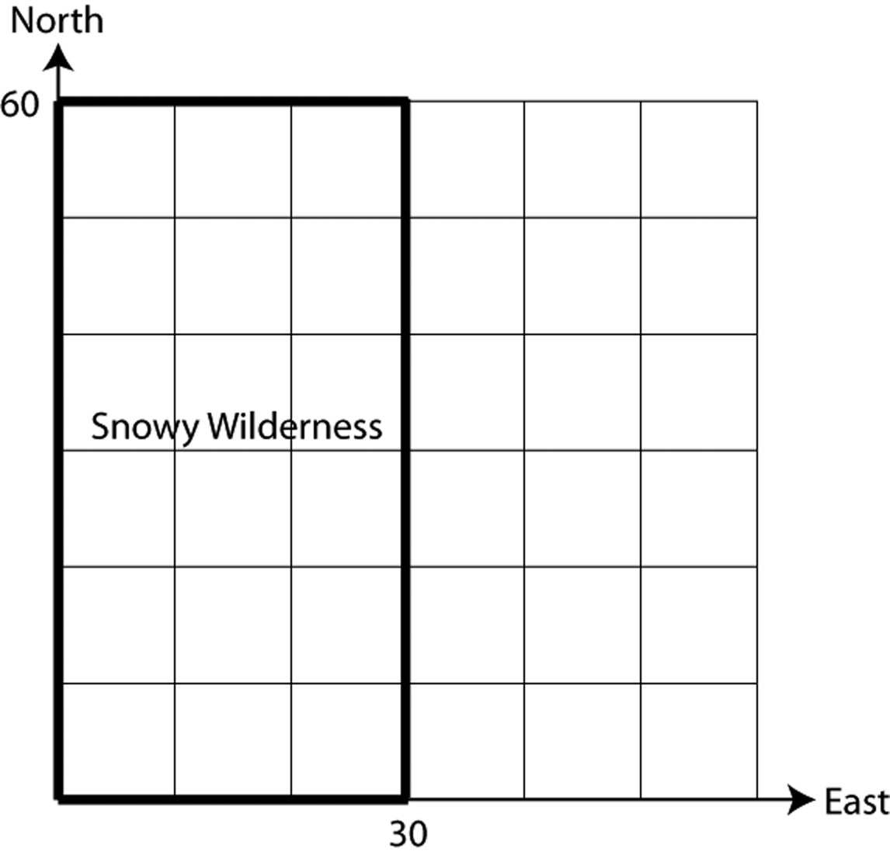
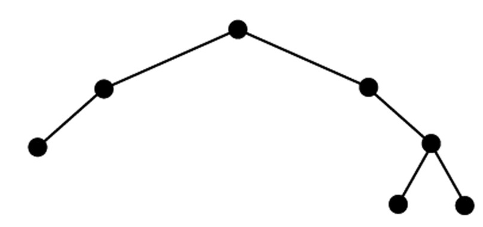
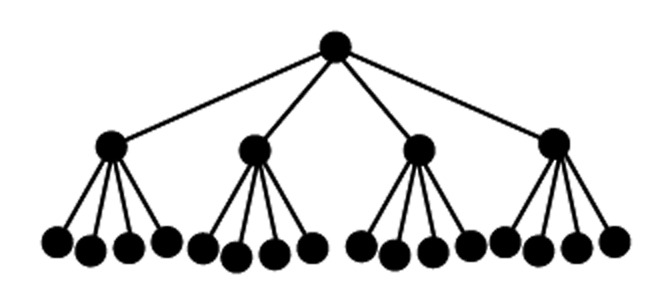

look for patternstinkerdescribevisualizerepresent symbolicallyprovecheck for plausibilitytake things apartconjecturechange or simplify the problemwork backwardsre-examine the problemchange representationscreate
look for patternstinkerdescribevisualizerepresent symbolicallyprovecheck for plausibilitytake things apartconjecturechange or simplify the problemwork backwardsre-examine the problemchange representationscreate
look for patternstinkerdescribevisualizerepresent symbolicallyprovecheck for plausibilitytake things apartconjecturechange or simplify the problemwork backwardsre-examine the problemchange representationscreate
look for patternstinkerdescribevisualizerepresent symbolicallyprovecheck for plausibilitytake things apartconjecturechange or simplify the problemwork backwardsre-examine the problemchange representationscreate
look for patternstinkerdescribevisualizerepresent symbolicallyprovecheck for plausibilitytake things apartconjecturechange or simplify the problemwork backwardsre-examine the problemchange representationscreate
look for patternstinkerdescribevisualizerepresent symbolicallyprovecheck for plausibilitytake things apartconjecturechange or simplify the problemwork backwardsre-examine the problemchange representationscreate
look for patternstinkerdescribevisualizerepresent symbolicallyprovecheck for plausibilitytake things apartconjecturechange or simplify the problemwork backwardsre-examine the problemchange representationscreate
look for patternstinkerdescribevisualizerepresent symbolicallyprovecheck for plausibilitytake things apartconjecturechange or simplify the problemwork backwardsre-examine the problemchange representationscreate
look for patternstinkerdescribevisualizerepresent symbolicallyprovecheck for plausibilitytake things apartconjecturechange or simplify the problemwork backwardsre-examine the problemchange representationscreate
look for patternstinkerdescribevisualizerepresent symbolicallyprovecheck for plausibilitytake things apartconjecturechange or simplify the problemwork backwardsre-examine the problemchange representationscreate
look for patternstinkerdescribevisualizerepresent symbolicallyprovecheck for plausibilitytake things apartconjecturechange or simplify the problemwork backwardsre-examine the problemchange representationscreate
look for patternstinkerdescribevisualizerepresent symbolicallyprovecheck for plausibilitytake things apartconjecturechange or simplify the problemwork backwardsre-examine the problemchange representationscreate
look for patternstinkerdescribevisualizerepresent symbolicallyprovecheck for plausibilitytake things apartconjecturechange or simplify the problemwork backwardsre-examine the problemchange representationscreate
look for patternstinkerdescribevisualizerepresent symbolicallyprovecheck for plausibilitytake things apartconjecturechange or simplify the problemwork backwardsre-examine the problemchange representationscreate
look for patternstinkerdescribevisualizerepresent symbolicallyprovecheck for plausibilitytake things apartconjecturechange or simplify the problemwork backwardsre-examine the problemchange representationscreate
look for patternstinkerdescribevisualizerepresent symbolicallyprovecheck for plausibilitytake things apartconjecturechange or simplify the problemwork backwardsre-examine the problemchange representationscreate
look for patternstinkerdescribevisualizerepresent symbolicallyprovecheck for plausibilitytake things apartconjecturechange or simplify the problemwork backwardsre-examine the problemchange representationscreate
look for patternstinkerdescribevisualizerepresent symbolicallyprovecheck for plausibilitytake things apartconjecturechange or simplify the problemwork backwardsre-examine the problemchange representationscreate
look for patternstinkerdescribevisualizerepresent symbolicallyprovecheck for plausibilitytake things apartconjecturechange or simplify the problemwork backwardsre-examine the problemchange representationscreate
look for patternstinkerdescribevisualizerepresent symbolicallyprovecheck for plausibilitytake things apartconjecturechange or simplify the problemwork backwardsre-examine the problemchange representationscreate
Habits
look for patternstinkerdescribevisualizerepresent symbolicallyprovecheck for plausibilitytake things apartconjecturechange or simplify the problemwork backwardsre-examine the problemchange representationscreate
look for patternstinkerdescribevisualizerepresent symbolicallyprovecheck for plausibilitytake things apartconjecturechange or simplify the problemwork backwardsre-examine the problemchange representationscreate
look for patternstinkerdescribevisualizerepresent symbolicallyprovecheck for plausibilitytake things apartconjecturechange or simplify the problemwork backwardsre-examine the problemchange representationscreate
look for patternstinkerdescribevisualizerepresent symbolicallyprovecheck for plausibilitytake things apartconjecturechange or simplify the problemwork backwardsre-examine the problemchange representationscreate
look for patternstinkerdescribevisualizerepresent symbolicallyprovecheck for plausibilitytake things apartconjecturechange or simplify the problemwork backwardsre-examine the problemchange representationscreate
look for patternstinkerdescribevisualizerepresent symbolicallyprovecheck for plausibilitytake things apartconjecturechange or simplify the problemwork backwardsre-examine the problemchange representationscreate
look for patternstinkerdescribevisualizerepresent symbolicallyprovecheck for plausibilitytake things apartconjecturechange or simplify the problemwork backwardsre-examine the problemchange representationscreate
look for patternstinkerdescribevisualizerepresent symbolicallyprovecheck for plausibilitytake things apartconjecturechange or simplify the problemwork backwardsre-examine the problemchange representationscreate
look for patternstinkerdescribevisualizerepresent symbolicallyprovecheck for plausibilitytake things apartconjecturechange or simplify the problemwork backwardsre-examine the problemchange representationscreate
look for patternstinkerdescribevisualizerepresent symbolicallyprovecheck for plausibilitytake things apartconjecturechange or simplify the problemwork backwardsre-examine the problemchange representationscreate
look for patternstinkerdescribevisualizerepresent symbolicallyprovecheck for plausibilitytake things apartconjecturechange or simplify the problemwork backwardsre-examine the problemchange representationscreate
look for patternstinkerdescribevisualizerepresent symbolicallyprovecheck for plausibilitytake things apartconjecturechange or simplify the problemwork backwardsre-examine the problemchange representationscreate
look for patternstinkerdescribevisualizerepresent symbolicallyprovecheck for plausibilitytake things apartconjecturechange or simplify the problemwork backwardsre-examine the problemchange representationscreate
look for patternstinkerdescribevisualizerepresent symbolicallyprovecheck for plausibilitytake things apartconjecturechange or simplify the problemwork backwardsre-examine the problemchange representationscreate
look for patternstinkerdescribevisualizerepresent symbolicallyprovecheck for plausibilitytake things apartconjecturechange or simplify the problemwork backwardsre-examine the problemchange representationscreate
look for patternstinkerdescribevisualizerepresent symbolicallyprovecheck for plausibilitytake things apartconjecturechange or simplify the problemwork backwardsre-examine the problemchange representationscreate
look for patternstinkerdescribevisualizerepresent symbolicallyprovecheck for plausibilitytake things apartconjecturechange or simplify the problemwork backwardsre-examine the problemchange representationscreate
look for patternstinkerdescribevisualizerepresent symbolicallyprovecheck for plausibilitytake things apartconjecturechange or simplify the problemwork backwardsre-examine the problemchange representationscreate
look for patternstinkerdescribevisualizerepresent symbolicallyprovecheck for plausibilitytake things apartconjecturechange or simplify the problemwork backwardsre-examine the problemchange representationscreate
look for patternstinkerdescribevisualizerepresent symbolicallyprovecheck for plausibilitytake things apartconjecturechange or simplify the problemwork backwardsre-examine the problemchange representationscreate
of Mind
look for patterns
to look for patterns amongst a set of numbers or figures
tinker
to play around with numbers, figures, or other mathematical expressions in order to learn something more about them or the situation; experiment
describe
to describe clearly a problem, a process, a series of steps to a solution; modulate the language (its complexity or formalness) depending on the audience
visualize
to draw, or represent in some fashion, a diagram in order to help understand a problem; to interpret or vary a given diagram
represent symbolically
to use algebra to solve problems efficiently and to have more confidence in one’s answer, and also so as to communicate solutions more persuasively, to acquire deeper understanding of problems, and to investigate the possibility of multiple solutions
prove
to desire that a statement be proved to you or by you; to engage in dialogue aimed at clarifying an argument; to establish a deductive proof; to use indirect reasoning or a counterexample as a way of constructing an argument
check for plausibility
to routinely check the reasonableness of any statement in a problem or its proposed solution, regardless of whether it seems true or false on initial impression; to be particularly skeptical of results that seem contradictory or implausible, whether the source be peer, teacher, evening news, book, newspaper, internet or some other; and to look at special and limiting cases to see if a formula or an argument makes sense in some easily examined specific situations
take things apart
to break a large or complex problem into smaller chunks or cases, achieve some understanding of these parts or cases, and rebuild the original problem; to focus on one part of a problem (or definition or concept) in order to understand the larger problem
conjecture
to generalize from specific examples; to extend or combine ideas in order to form new ones
change or simplify the problem
to change some variables or unknowns to numbers; to change the value of a constant to make the problem easier; change one of the conditions of the problem; to reduce or increase the number of conditions; to specialize the problem; make the problem more general
work backwards
to reverse a process as a way of trying to understand it or as a way of learning something new; to work a problem backwards as a way of solving
re-examine the problem
to look at a problem slowly and carefully, closely examining it and thinking about the meaning and implications of each term, phrase, number and piece of information given before trying to answer the question posed
change representations
to look at a problem from a different perspective by representing it using mathematical concepts that are not directly suggested by the problem; to invent an equivalent problem, about a seemingly different situation, to which the present problem can be reduced; to use a different field (mathematics or other) from the present problem’s field in order to learn more about its structure
create
to invent mathematics both for utilitarian purposes (such as in constructing an algorithm) and for fun (such as in a mathematical game); to posit a series of premises (axioms) and see what can be logically derived from them
look for patternstinkerdescribevisualizerepresent symbolicallyprovecheck for plausibilitytake things apartconjecturechange or simplify the problemwork backwardsre-examine the problemchange representationscreate
look for patternstinkerdescribevisualizerepresent symbolicallyprovecheck for plausibilitytake things apartconjecturechange or simplify the problemwork backwardsre-examine the problemchange representationscreate
look for patternstinkerdescribevisualizerepresent symbolicallyprovecheck for plausibilitytake things apartconjecturechange or simplify the problemwork backwardsre-examine the problemchange representationscreate
look for patternstinkerdescribevisualizerepresent symbolicallyprovecheck for plausibilitytake things apartconjecturechange or simplify the problemwork backwardsre-examine the problemchange representationscreate
look for patternstinkerdescribevisualizerepresent symbolicallyprovecheck for plausibilitytake things apartconjecturechange or simplify the problemwork backwardsre-examine the problemchange representationscreate
look for patternstinkerdescribevisualizerepresent symbolicallyprovecheck for plausibilitytake things apartconjecturechange or simplify the problemwork backwardsre-examine the problemchange representationscreate
look for patternstinkerdescribevisualizerepresent symbolicallyprovecheck for plausibilitytake things apartconjecturechange or simplify the problemwork backwardsre-examine the problemchange representationscreate
look for patternstinkerdescribevisualizerepresent symbolicallyprovecheck for plausibilitytake things apartconjecturechange or simplify the problemwork backwardsre-examine the problemchange representationscreate
look for patternstinkerdescribevisualizerepresent symbolicallyprovecheck for plausibilitytake things apartconjecturechange or simplify the problemwork backwardsre-examine the problemchange representationscreate
look for patternstinkerdescribevisualizerepresent symbolicallyprovecheck for plausibilitytake things apartconjecturechange or simplify the problemwork backwardsre-examine the problemchange representationscreate
look for patternstinkerdescribevisualizerepresent symbolicallyprovecheck for plausibilitytake things apartconjecturechange or simplify the problemwork backwardsre-examine the problemchange representationscreate
look for patternstinkerdescribevisualizerepresent symbolicallyprovecheck for plausibilitytake things apartconjecturechange or simplify the problemwork backwardsre-examine the problemchange representationscreate
look for patternstinkerdescribevisualizerepresent symbolicallyprovecheck for plausibilitytake things apartconjecturechange or simplify the problemwork backwardsre-examine the problemchange representationscreate
look for patternstinkerdescribevisualizerepresent symbolicallyprovecheck for plausibilitytake things apartconjecturechange or simplify the problemwork backwardsre-examine the problemchange representationscreate
look for patternstinkerdescribevisualizerepresent symbolicallyprovecheck for plausibilitytake things apartconjecturechange or simplify the problemwork backwardsre-examine the problemchange representationscreate
look for patternstinkerdescribevisualizerepresent symbolicallyprovecheck for plausibilitytake things apartconjecturechange or simplify the problemwork backwardsre-examine the problemchange representationscreate
look for patternstinkerdescribevisualizerepresent symbolicallyprovecheck for plausibilitytake things apartconjecturechange or simplify the problemwork backwardsre-examine the problemchange representationscreate
look for patternstinkerdescribevisualizerepresent symbolicallyprovecheck for plausibilitytake things apartconjecturechange or simplify the problemwork backwardsre-examine the problemchange representationscreate
look for patternstinkerdescribevisualizerepresent symbolicallyprovecheck for plausibilitytake things apartconjecturechange or simplify the problemwork backwardsre-examine the problemchange representationscreate
look for patternstinkerdescribevisualizerepresent symbolicallyprovecheck for plausibilitytake things apartconjecturechange or simplify the problemwork backwardsre-examine the problemchange representationscreate
Habits
look for patternstinkerdescribevisualizerepresent symbolicallyprovecheck for plausibilitytake things apartconjecturechange or simplify the problemwork backwardsre-examine the problemchange representationscreate
look for patternstinkerdescribevisualizerepresent symbolicallyprovecheck for plausibilitytake things apartconjecturechange or simplify the problemwork backwardsre-examine the problemchange representationscreate
look for patternstinkerdescribevisualizerepresent symbolicallyprovecheck for plausibilitytake things apartconjecturechange or simplify the problemwork backwardsre-examine the problemchange representationscreate
look for patternstinkerdescribevisualizerepresent symbolicallyprovecheck for plausibilitytake things apartconjecturechange or simplify the problemwork backwardsre-examine the problemchange representationscreate
look for patternstinkerdescribevisualizerepresent symbolicallyprovecheck for plausibilitytake things apartconjecturechange or simplify the problemwork backwardsre-examine the problemchange representationscreate
look for patternstinkerdescribevisualizerepresent symbolicallyprovecheck for plausibilitytake things apartconjecturechange or simplify the problemwork backwardsre-examine the problemchange representationscreate
look for patternstinkerdescribevisualizerepresent symbolicallyprovecheck for plausibilitytake things apartconjecturechange or simplify the problemwork backwardsre-examine the problemchange representationscreate
look for patternstinkerdescribevisualizerepresent symbolicallyprovecheck for plausibilitytake things apartconjecturechange or simplify the problemwork backwardsre-examine the problemchange representationscreate
look for patternstinkerdescribevisualizerepresent symbolicallyprovecheck for plausibilitytake things apartconjecturechange or simplify the problemwork backwardsre-examine the problemchange representationscreate
look for patternstinkerdescribevisualizerepresent symbolicallyprovecheck for plausibilitytake things apartconjecturechange or simplify the problemwork backwardsre-examine the problemchange representationscreate
look for patternstinkerdescribevisualizerepresent symbolicallyprovecheck for plausibilitytake things apartconjecturechange or simplify the problemwork backwardsre-examine the problemchange representationscreate
look for patternstinkerdescribevisualizerepresent symbolicallyprovecheck for plausibilitytake things apartconjecturechange or simplify the problemwork backwardsre-examine the problemchange representationscreate
look for patternstinkerdescribevisualizerepresent symbolicallyprovecheck for plausibilitytake things apartconjecturechange or simplify the problemwork backwardsre-examine the problemchange representationscreate
look for patternstinkerdescribevisualizerepresent symbolicallyprovecheck for plausibilitytake things apartconjecturechange or simplify the problemwork backwardsre-examine the problemchange representationscreate
look for patternstinkerdescribevisualizerepresent symbolicallyprovecheck for plausibilitytake things apartconjecturechange or simplify the problemwork backwardsre-examine the problemchange representationscreate
look for patternstinkerdescribevisualizerepresent symbolicallyprovecheck for plausibilitytake things apartconjecturechange or simplify the problemwork backwardsre-examine the problemchange representationscreate
look for patternstinkerdescribevisualizerepresent symbolicallyprovecheck for plausibilitytake things apartconjecturechange or simplify the problemwork backwardsre-examine the problemchange representationscreate
look for patternstinkerdescribevisualizerepresent symbolicallyprovecheck for plausibilitytake things apartconjecturechange or simplify the problemwork backwardsre-examine the problemchange representationscreate
look for patternstinkerdescribevisualizerepresent symbolicallyprovecheck for plausibilitytake things apartconjecturechange or simplify the problemwork backwardsre-examine the problemchange representationscreate
look for patternstinkerdescribevisualizerepresent symbolicallyprovecheck for plausibilitytake things apartconjecturechange or simplify the problemwork backwardsre-examine the problemchange representationscreate
of Mind
prove
At Arnaldo’s small party, people shook hands with as many
people they liked, from 0 up to everyone else at the party.
Nayla has been paying close attention, and says that if you
add up everyone’s personal “handshake total”, you will get
15. Can she be correct? Explain.
Often in life, when someone says something that seems
surprising, counter-intuitive, or even reasonable, we will look
not at the conviction with which the speaker is speaking, but
instead for the evidence and reasoning needed to back up their
claim. In mathematics, we do the same thing. It is a fun fact
of mathematics that many things that initially appear to be
false are in fact true, and as well many things that appear to
be true are false. So the only way to know if a statement is
correct is to use clear reasoning based on assumptions we all
agree upon.
Proving is a way of demonstrating to yourself and others
that something you think may be true (or false), must in fact
be true (or false). Although there are many different ways of
proving a statement, everyone agrees that the steps of a proof
should be clear: a careful reader should be able to read each
step of your proof and see how it connects and follows from the
one before. That way, at the conclusion of your proof, they
will agree with you!
In the “Arnaldo’s party” problem above, at first it may seem
a bit mystifying how to approach testing Nayla’s claim.
Probably the best thing to do at first is to Tinker by trying
to see if you can get a “handshake total” for all party members
to be equal or close to 15. If you can get to exactly 15,
you’re done; Nayla is correct, and the problem is over. On the
other hand, if you have tried a number of different handshake
“scenarios” and only gotten close to 15 in each case,
nevertheless you will probably have noticed something
interesting about handshake totals in general—something you
might try to prove (and which will tell us if Nayla can be
correct as well).
So, when presented with a claim, do three things. First,
decide whether it seems reasonable – do you believe it at first
glance? Next, try to find evidence that the claim is or is not
true. Finally, for any claim that you believe to be true, try
to prove that it’s true by making a sequence of logical
statements, each of which your peers could understand and agree
to; and for any claim you believe to be false, provide an
example that shows the claim is false—such an example is called
a counterexample.
Here’s a problem that many students have enjoyed:
A 64-square black and white checkerboard (see above) can
clearly be completely covered by 32 dominos. If the top right
and bottom left squares are removed, what is left is a
62-square board. How many dominoes will be required to cover
the 62-square board?
[Continuation of problem 2] Did you check your answer to
problem 2? A 64 square checkerboard is covered by 32 dominoes
since every domino covers 2 squares, a white one and a black
one. In the altered checkerboard, how many black squares are
there? How many white squares? Would 31 dominoes do the
job?
Here’s another problem that might seem very tricky at first,
but with a little persistence and some tinkering . . .
In a stock market game, Traci claims that she can purchase
any stock above $\$26$ by using only $\$5$ and $\$6$ coupons. (For
example, there is no way she could purchase $\$13$ of stock with
these coupons, but she could purchase $\$41$ of stock by using
one $\$6$ coupon and seven $\$5$ coupons.) Do you think that Traci
can really pull this off?
As a token of our affection to you, the answer is given on
the reverse.
While it may seem plausible that there is always some
combination of $\$5$ and $\$6$ coupons that is equivalent to a
specific amount of money, it at first seems unlikely that we
may be able to prove that any amount over $\$26$ can be produced
by some combination of the two coupons. How would we know for
sure that $\$329876$ could be paid out?
Our best strategy is to begin by tinkering, and then see if
there are any interesting patterns that emerge. We can then try
to establish through careful reasoning that the patterns we see
are no fluke, that they have to continue.
So let’s start.
The first few dollar amounts one can figure out just by
tinkering:
$\$27$ stock can be paid by using three $\$5$ coupons and two $\$6$
coupons.
$\$28$ stock can be paid by using two $\$5$ coupons and three $\$6$
coupons.
$\$29$ stock can be paid by using one $\$5$ coupon and four $\$6$
coupons.
$\$30$ stock can be paid by using no $\$5$ coupons and five $\$6$
coupons.
$\$31$ stock can be paid by using five $\$5$ coupons and one $\$6$
coupon.
Wait a second. Isn’t this sort of tedious? Doesn’t it seem
like this approach would take us forever, and even then we
would still have an infinity of numbers left to check? And
weren’t we supposed to look for a pattern? There doesn’t seem
to be any pattern in the $\$5$’s and $\$6$’s at all.
Well, let’s think about a $\$32$ stock. Traci knows how to
purchase a $\$27$ stock—three $\$5$ coupons and two $\$6$ coupons. What
coupon should she now add in order to purchase a $\$32$ stock?
Now convince yourself that Traci’s claim is valid.
Phillip says that every whole number has an even number of
positive integer factors (for example, 6 is $1 \cdot 6$ and
$2 \cdot 3$ so its factors are 1,6,2,3). Either explain why
he is correct, or give a counterexample.
Think of any three consecutive integers and add them
together. If you repeat this a few times you will notice
something interesting about the sum. What is it?
If I own 12 blue socks, 16 red socks, and 18 green socks,
and I reach in the dark in to my sock drawer, how many socks
will I have to take out to guarantee that I have a pair that
are the same color?
In the diagram below, the area of the gray rectangle is $x
\cdot 1 = x$, while the area of the whole square is $x \cdot x = x^2$. Ringo
says that since the gray rectangle fits inside of the square,
this shows that $x$ is smaller than ${x^{\rm{2}}}$ for
any positive number. What do you think of Ringo’s
argument?
In the “matches” game, 30 matches are laid on a table. The
first player picks up anywhere from 1 to 6 matches, the
second player also picks up anywhere from 1 to 6 matches, and
the two then alternate picking up 1 to 6 matches until all
the matches have been picked up. The player who picks up the
last match loses. Can the first player always win with clever
play?
If $\lfloor k \rfloor$ represents the smallest integer
greater than or equal to $k$, we can agree that $\lfloor 2
\rfloor = 2$ and $\lfloor 5.3 \rfloor = 6$.
Are either of the following true?
i. $\lfloor x \rfloor + \lfloor y \rfloor = \lfloor {x + y}
\rfloor$
ii. $\lfloor x \rfloor \lfloor y \rfloor = \lfloor {xy}
\rfloor$
The French mathematician, Pierre Fermat (1601-1665)
claimed that no one could find positive integers $n$, $m$ and $r$
such that ${n^x} + {m^x} = {r^x}$ for any integer $x$ greater
than 2. But in an episode of The Simpsons, the equation
${1782^{12}} + {1841^{12}} = {1922^{12}}$ appears. What do
you think?
Prove that if there are 6 people who can arbitrarily shake
hands with one another, there is always a pair of persons who
shake hands with the same number of people. Then prove this
is true if there are $n$ people.
When asked to square a certain integer, Joshua came up
with an answer of 637812, Wendy came up with 637813, and
Anthwaran with 637818. Without using a calculator, determine
which of them could be right.
Can one make change for a 25-ruble bill, using exactly ten
smaller bills of denominations of 1, 3, or 5 rubles? (The 1,
3, 5, and 25 ruble denominations used to be standard in
Russian currency.)
Imagine you are at a school that has a row of 500 lockers,
all shut. Initially a student goes along the row and opens
every locker. Then a second student goes along and shuts
every other locker beginning with locker number 2. A third
student changes the state of every third locker beginning
with locker number 3—that is, if a locker is open the student
shuts it, and if a locker is closed the student opens it. A
fourth student changes the state of every fourth locker
beginning with locker number 4.
This continues until all 500 students have followed the
pattern with the 500 lockers. At the end, which lockers will
be open and which will be closed?
In a certain year there were exactly four Fridays and
exactly four Mondays in January. Gisele says that, given only
that information, she can determine what day of the week the
20th of January must fall on in that year. Is Gisele
correct?
There are 12 million people in New York City. The number
of hairs on a human head never exceeds 750,000. Must there be
2 people in New York who have the same number of hairs on
their head?
Lesson 1:
Algorithms
Introduction
An explorer is lost in the 30 by 60 mile rectangular section
of snowy wilderness shown below. The search and rescue team
knows that she started her journey at the southwest corner, and
since there hasn’t been any new snow for a while, they also
know that they’ll be able to see her tracks.

Obviously, the team wants to find the lost explorer as
quickly as possible. There are different ideas about how to do
this, though, so they decide to split into
two groups. Group A will start at the southwest corner and
simply follow the explorer’s trail. Group B, though, has a
different strategy. Here’s what they do:
Group B starts out at $\left( {0,30} \right)$, and
walks directly east. Every
time they cross the explorer’s trail, they make a note of it.
Suppose that by the time they reach the eastern border,
they’ve crossed the explorer’s trail 5 times. What can they
conclude about where the explorer must be now? How about if
they’d crossed the trail 8 times?
As you can see, Group B’s west-to-east walk allows them to
cut the remaining search area in half. Their idea is to keep
repeating this until they’ve narrowed down the search area to
a small horizontal strip. Suppose that on the first walk
(along $y = 30$), they crossed the trail 3 times.
What horizontal line should they
walk next?
Now, suppose that on the second
walk, they cross the
explorer’s trail 6 times. Where could the explorer possibly
be? Demonstrate your answer by drawing a picture of one such
trail the explorer could have taken.
Is Group B’s strategy better than Group A’s? To help you
answer this question, determine approximately how long each
one would take to find the lost explorer in each of
the following scenarios. (Assume that each group moves at the
same speed, and that as soon as a group comes within
a mile or so, they’ll see the explorer’s signal flares.)
Development
The two strategies in the situation above are both examples
of algorithms— though, of course, Group A’s is a rather
simple one. An algorithm is simply a clearly defined,
step-by-step process for accomplishing a desired task. You can
think of every algorithm as having three main parts: input,
process and output. In the search and rescue situation, for
example, the input would be the whole search area and the
explorer’s trail, and the output would be the explorer’s
location.
As you can hopefully see, thinking about and analyzing
algorithms can be
useful in situations where there are multiple possible
approaches, and we want the “best” or most efficient one. But
this kind of thinking isn’t only useful in practical
applications — it’s also a source of some classic games and
puzzles.
The Number Devil is thinking of an integer between 1 and
63 (inclusive), and your job is to guess it. If you guess
wrong, the Number Devil will tell you (truthfully) whether
your guess is too low or too high. Come up with a strategy
for finding the Number Devil’s number in as few guesses as
possible.
Was there anything in common between your strategy in the
previous problem and Group B’s approach to finding the missing
explorer? Group B’s strategy — and, likely, yours — is an
example of a binary search algorithm. (The Latin root $bini$ means “two-by-two”.) Here’s another application of it.
Your English teacher has an alphabetized stack of 15
papers,
but she’s forgotten whose papers she collected. Now, she
needs to check and see if she has Gabi’s paper in the stack.
She decides to use a binary search algorithm.
Simulate this with your group: have
a group member make an alphabetized list of names without
showing you. The list maker gets to decide whether or not
“Gabi” is in the list. You, in the role of the teacher, can
ask for any individual name in the list (e.g., “Who is the
fifth person in the list?”). How many times do you have to
ask before you can be sure whether or not Gabi’s name is in
the stack?
Make up an alphabetized list of 15
names that would
force the teacher’s binary search process to make the most
guesses possible. This is called a “worst case” input for
the
algorithm. How many guesses does the algorithm take,
in the worst case?
Now, you decide to play a little trick on the teacher.
Carefully rearrange the ordering of names you made in part
b of the previous problem so that, when your teacher uses
binary search, she’ll end up mistakenly concluding that
Gabi’s paper is not in the stack.
Based on what happened in problem 6, it’s clear that there
are certain situations in which the binary search algorithm
isn’t appropriate. This is always true: every algorithm makes
some assumptions about its input.
What assumption(s) did the teacher make in using her
binary search algorithm?
In addition to thinking carefully about the input, it’s also
helpful when working with algorithms to identify the basic operations your algorithm can use. The basic operations are
always based on the situation you’re dealing with: they are
the
actions you’re able to do as a single “step” of your algorithm.
In the Number Devil game, for example, your basic operation was
to guess a number and find out if it was correct, too big, or
too small. In the stack of papers example,
the basic operation was to check the name on a single paper in
the stack and compare it alphabetically with the name ‘Gabi’.
The basic operation in the
following game is similar to these two, but slightly
different.
Play the following game with a classmate:
Your partner should write
five different numbers on slips of paper. Then shuffle the
papers and put them face down on the table in a straight
row.
You are the guesser. Your
job is to figure out which paper has the largest number written
on it. But you can never
see the numbers themselves — you can only ask for
comparisons. For example, you could point to the first
slip and the fourth slip, and your classmate would have
to tell you which one has the larger number.
Each comparison counts as
one step, and your goal is to find the paper with the largest
number with as few steps as possible.
Play the game and identify the paper
with the largest
number. How many steps did it take before you were
certain about your answer?
Describe, in detail, an algorithm for
finding the largest
number in a list of numbers, using as few comparisons
as possible.
Aaron has an algorithm that he claims can find the largest
number every time using only three comparisons. Either figure
out Aaron’s algorithm, or explain why it’s impossible.
Here’s a somewhat different algorithmic puzzle that many
consider a “modern classic.” (In fact, the story goes that,
before it got out onto the Internet, this was a question that
Google interviewers asked of potential employees.)
You have two perfectly identical eggs. You need to figure
out how high an egg can fall from a 100-story building before
it breaks. You know nothing about the toughness of the eggs;
they may be very fragile and break when dropped from the first
floor. On the other hand, they may be super tough genetically
altered eggs, so tough that that dropping them from the 100th
floor doesn’t even cause a scratch. The only thing you know for
sure is that they both have exactly the same “toughness.”
Joey takes his first egg, and drops it off of the fourth
floor. It doesn’t break. Then, he goes up and drops it off
the tenth floor, and it shatters spectacularly on the
sidewalk. Finally, he takes his second (and last) egg, and
drops it off the seventh floor. It breaks. What can Joey
conclude about the toughness of his eggs?
Come up with a strategy for figuring out your eggs’
toughness. Your job is to guarantee the smallest
number of egg-drops, in the worst case. You are
allowed to break both eggs, but remember, two is all
you get!
Practice
You have 16 identical-looking coins. Fifteen of them have
exactly the same weight, and one is too heavy. Describe
an algorithm for finding the heavy coin in as few steps as
possible. The basic operation allowed is to use a simple
balance to compare 2 piles of coins to see which pile is
heavier.
In the algorithm you use for adding two very large numbers
by hand, what are the basic operations? How about multiplying
two numbers by hand? Dividing?
Describe the mental algorithm a street vendor might
use
to quickly make change for a $\$20$ bill. Make sure your
algorithm works by testing it out the following sale amounts:
$\$1.50$, $\$3.00$, $\$11.45$, $\$17.26$.
Write an algorithm for finding someone’s age based on
their birth date and the current date. (For instance, Tom’s
birth date is 6/14/90 and today’s date is …. so Tom is ….
years old.)
Recall the Number Devil game from problem 4. Now let’s say
you’re trying to guess a number between 1 and 255. If you
were going to play using the binary search algorithm, what
would be one worst-case number that the Number Devil could
choose?
Consider the following strategy to the egg-drop
problem:
Starting at floor 1,
drop the first egg off of odd-numbered floors until it breaks.
Then, go back down one floor and drop the second egg. If it
breaks, that’s the answer. If not, then the floor above is the
answer.
Say you get to decide how
tough the eggs are, and you want to force the strategy above to
make the largest possible number of drops before it
succeeds.
What is the worst-case
input for this strategy?
i.e., how tough should you make the eggs?
What’s the worst-case
number of drops?
Going Further
The algorithms we’ve worked with so far dealt with lists of
information, whether they were lists of numbers, names, phone
numbers, etc. Now, we’re going to look at algorithms that
transform a single item, such as a number, word, etc.
You and your friend are planning to share lockers, so as
soon as you get your combinations, you plan to exchange them
over the phone. Each combination has three numbers in it –
for example, 11 – 2 – 41.
In case someone might be listening, though, you agree ahead
of time to use the following algorithm to encrypt each number
in the combination:
${\mathop{\rm EncryptNumber}\nolimits} \left( N \right)$:
If $N$ is odd, then output $2 + N$.
Otherwise, output $2 \cdot N$.
Notice that the notation
being used here is similar to the “function notation” that
you’ve seen in some previous
lessons. “EncryptNumber” is the name of the algorithm, and $N$ is
a name for the input to the algorithm.
Your combination is 12 – 7 – 11. What
should you tell
your friend?
Your friend tells you 80 – 28 – 29.
What was her
combination?
Your brother wants to use the same system with his friend,
but he’s confused about how it’s possible to “decrypt” the
numbers he receives. Give him detailed instructions for a
“DecryptNumber” algorithm that he can use to understand what
his friend tells him.
One convenient feature of using function notation is that we
can use it to easily write down things about what an algorithm
does for specific inputs. For example, we can write
${\rm{EncryptNumber}}\left( 4 \right) = 8$, or
${\rm{DecryptNumber}}\left( 8 \right) = 4$.
What is ${\rm{DecryptNumber}}\left( {13} \right)$? How
about ${\rm{DecryptNumber}}\left( {24} \right)$? And
${\rm{DecryptNumber}}\left( {18} \right)$?
Predict what would happen if you applied the EncryptNumber
algorithm to each of your three answers in the previous
problem. Then try it out to test your prediction.
When you use an algorithm to encode a message so that no
strangers can understand it, it’s called an “encryption”
algorithm. This is essentially what a computer does when you
enter a password or other personal information on a website, so
that nobody besides the website owner can see it.
Another kind of encoding is called “compression”. With
compression, the idea is to shrink the size of a message down
so it’s faster to transport. This is why mp3’s are such a big
deal: they allow you to compress very large song files so that
they’re small enough to download quickly.
Emmett wants to compress all the old emails he’s saved on
his computer. Thinking of the shorthand he sometimes uses for
text messages, he decides to go through each message and
remove all the vowels and all the spaces. One problem with
this approach is that it simply doesn’t shrink the message by
all that much. However, there’s a much deeper problem. What
is it? Can you suggest an alternative method for compressing
Emmett’s emails?
What are some characteristics that would make a good
compression algorithm? What characteristics are absolutely
necessary?
You saw with the compression and encryption algorithms above
that they’re only useful if they also have decompression and
decryption algorithms to go with them. These are two examples
of a more general type of algorithm called an inverse
algorithm. When you have two algorithms, and each one reverses
the other, then the two algorithms are called inverses of each
other. Using this language, we can say the major flaw in
Emmett’s compression algorithm was that it has no inverse
algorithm. (Why not?)
You want to share your gym locker with a different friend
from the one in problem 18. But she and your other friend
don’t get along, so you need a different code for this
locker. Here’s the one you use:
${\mathop{\rm GymCode}\nolimits}
\left( N \right)$:
If $N$ is odd, then output $2N$.
Otherwise, if $N$ is a multiple of 4, output $N + 1$.
Otherwise, output $2N + 3$.
Write an inverse for this
algorithm called GymDecode.
Now, let’s say you wanted to write down all your passwords
so you don’t forget them. Since someone else might see the
paper, you decide to encrypt all the
passwords so that only you will know what they really are.
You’ve already got two encryption algorithms: EncryptNumber
from problem 18 and GymCode from problem 24. So you can just
combine the two to create the SuperSecretCode algorithm, as
follows:
${\mathop{\rm
SuperSecretCode}\nolimits} \left( N \right)$:
Output ${\mathop{\rm EncryptNumber}\nolimits} \left(
{{\mathop{\rm GymCode}\nolimits} \left( N \right)} \right)$.
Recall that ${\mathop{\rm GymCode}\nolimits} \left( N
\right)$ just means “the output of GymCode when you
input $N$”. Similarly, “${\mathop{\rm EncryptNumber(GymCode}\nolimits} \left( N
\right))$” means, “the output
of EncryptNumber when you input ${\mathop{\rm
GymCode}\nolimits} \left( N \right)$”.
What is the value of ${\mathop{\rm
SuperSecretCode}\nolimits} \left( {14} \right)$? (Hint:
first
figure out the value of ${\mathop{\rm GymCode}\nolimits}
\left( {14} \right)$, and then use
substitution.)
Write the inverse algorithm, SuperSecretDecode.
Practice
I have three bags, two with marbles in them (bags A and B)
and one without (bag C).
First, I take half the marbles in bag A and add them to bag
B. Then I recount the marbles in bag B, take out half, and
put them in bag C.
You know that when I’m done, the contents of the bags are as
follows:
Bag A: 10 marbles
Bag B: 20 marbles
Bag C: 20 marbles
Find out how many marbles were in the bags originally.
Write an inverse algorithm to reverse the following
process:
Take a number and add 4 to it. Then multiply your answer by
3. Finally, subtract 1 from your answer.
Is there an inverse for an algorithm that sorts a list of
numbers in ascending order? (“Ascending order” just means
from least to greatest.)
An algorithm takes a number, multiplies it by 2, and then
adds 5. If the output from the algorithm is $X$, what was its
input, in terms of $X$?
Write an inverse algorithm to reverse the following
process:
Take an integer between 1 and 99. If it’s a 2-digit number,
multiply it by 5. If it’s a 1-digit number, multiply it by 10
and then add 1.
(Try the process on a few different numbers first.)
The ShiftCipher algorithm is a simple way of encrypting a
word. Here’s how it works:
Take a word, such as DOOR. Shift the first letter once – D
becomes E.
Then, since D is the 4th letter of the alphabet, shift all
the other letters 4 times – OOR becomes SSV.
If at any point you hit Z and need to go past it, then just
wrap back around to A.
So, ShiftCipher(“DOOR”) = “ESSV”.
(Another example: ShiftCipher(“EYES”) = “FDJX” –
try it).
Write the DecryptShiftCypher algorithm.
Problems
You always set your alarm clock to wake you up one hour
before you have to leave. But if you have to leave before 7
am, you give yourself 15 extra minutes to get ready since you
know you’ll be groggy.
What’s the input for the
process
described above? What’s its output?
What time would you have to leave
if the clock woke you up at 5:40am? 5:50am?
Your alarm wakes you up. Based on
the time you see on the clock, how do you know when you’ll
have to leave?
You’ve got a stack of five pancakes, all of different
sizes. Your only tool is a spatula, and the only basic
operation allowed is: insert the spatula beneath any pancake
in the stack and flip the whole section of the stack that’s
above the spatula onto the remaining stack below. Your job is
to sort the stack so that the smallest pancake ends up on top
and the pancakes increase in size as you go down the
stack.
Sort each of the following
stacks,
using as few flips as possible.
Write a general algorithm for
sorting any stack, and try it out on a few different initial
arrangements of pancakes.
Make up a worst-case initial
arrangement of five pancakes for your algorithm. How many
flips does your algorithm take in the worst case?
You’ve lost your calculator, and your
diabolical arch nemesis has decided
to exploit this opportunity. He’ll
make calculations for you — for a
price! Multiplication costs $\$1$, whereas
exponentiation costs $\$6$. Unfortunately, you desperately need
to compute ${7^{10}}$, and you’ve only got $\$5$. What will
you do?
You input any word, and the
AlphaBlast algorithm outputs the
same word but with all the ‘a’s replaced with ‘z’s. Is
AlphaBlast reversible?
Example: AlphaBlast(“mathematics”) = “mzthemztics”. Test it
carefully and then explain your answer. (An algorithm is
called reversible if it’s possible to create an inverse
algorithm for it.)
For each of the following algorithms,
assume that the input can be any number, and call it $X$.
Read each description, and decide in each case whether the
algorithm is reversible. If so, write the inverse.
The Foo algorithm either multiplies
$X$ by 2 (if it’s a whole number) or doesn’t change it (if
it’s not a whole number).
The Bar algorithm either multiplies
$X$ by 2 (if it’s NOT a whole number) or doesn’t change it
(if it IS a whole number).
The FractionsAreFun algorithm takes
$X$, adds 10, and divides that answer by 4, and outputs the
result.
The NoReallyTheyAre algorithm
divides $X$ by 20 then adds 1 and
outputs the result.
The Flip algorithm outputs the
value of 100/$X$, unless $X$ is zero, in which case the
output is just zero.
The Flop algorithm divides 20 by
$X$, then adds 1 and outputs the result.
The Square algorithm simply outputs
the value of ${X^2}$.
Here’s a variation on the Number Devil game: the Number
Devil is allowed to change its secret number after each time
you guess. However, it can’t change it in a way that makes
any of its previous answers untrue. (So, if you guessed “5”
the first time and the answer was “higher”, it could not
change its answer to “2”, but it $could$ change it to
“7”.)
Explain why binary search
algorithm’s worst-case guarantee
is still the same.
Describe an algorithm the Number
Devil could use to force a worst-case outcome every time, as
long as you didn’t get lucky and guess right the first
time.
Here’s a tougher variation of the game you played in
problem 8. The setup is the same: your partner shuffles the
cards and lines them up, and you can’t look at them. But now,
instead of just finding the largest one, your goal is to sort
all the cards into descending order (i.e., line them up from
largest to smallest). Your basic operations are (i) to ask
your partner to compare two cards (just like last time), and
(ii) to swap the positions of any two cards.
Write an algorithm for this game. That is, create an
algorithm that will sort a list of 5 numbers. After writing
the algorithm, go ahead and try it out with a group member.
Does it work?
Look back at your pancake-flipping algorithm from problem
34. If you extended your algorithm to stacks of $N$ pancakes,
how many flips, maximum, could you
guarantee it taking — that is, what’s the worst it could
do?
Here’s a different version of the pancake problem. This
time, you have three plates. Plate #1 has a stack of 5
pancakes, in order from the largest one on the bottom to the
smallest on top. This time, though, you can only use the
spatula to shift one pancake at a time to another plate. At
no time can any larger pancake be on top of a smaller
pancake. How many moves does it take to get the entire stack
of pancakes from Plate #1 to Plate #3?
If you double the size of a list in which you’re doing a
binary search, will it (in the worst-case scenario) take you
about twice as long to do the search?
The shape below is called a “tromino.”
Each of the following “checkerboards” has had one square
removed. For each board, find a way to cover all of the
remaining squares with trominoes.
You have only a compass and an unmarked straightedge. Come
up with an algorithm for finding a point equidistant from
three given points. In doing so, you will have proven that it
is always possible to find such a point.
Alice is in the top right square of a giant chessboard,
and the white rabbit she’s chasing is in the bottom left
square. Each turn, Alice gets to move one square up, down,
left, or right. Then, after that, the white rabbit gets to
move (up, down, left, or right). Alice catches the rabbit
when she’s able to move into the square he’s
sitting in. Assuming that both Alice and the white rabbit are
strategically quite savvy, predict the outcome.
The Floor operation takes any number whatsoever as an
input. ${\mathop{\rm Floor}\nolimits} (x)$ simply takes $x$ and returns the greatest integer that’s less than or equal to
$x$. In other words, the Floor function always “rounds down.”
Examples: ${\mathop{\rm Floor}\nolimits} (2.001) = 2$,
$\mathrm{Floor}(\pi ) = 3$, and $\mathrm{Floor}(5.9999)=5$.
The following algorithm, which uses Floor and some basic
arithmetic operations, only takes positive integers for its
input. What does it do?
The RightShift and LeftShift operations work for any
non-negative integers with five or fewer digits:
${\mathop{\rm RightShift}\nolimits} (N,d)$ chops off the
rightmost
$d$ digits of $N$ and outputs the result.
Example: ${\mathop{\rm RightShift}\nolimits} (3214,2) = 32$.
${\mathop{\rm Left}\nolimits} {\mathop{\rm Shift}\nolimits}
(N,d)$ moves each digit $d$ places to the left, and fills in 0’s in the empty spaces;
then, it chops off all
but the last five digits. Examples:
${\mathop{\rm Left}\nolimits} {\mathop{\rm Shift}\nolimits}
(75,3) = 75000$, and ${\mathop{\rm Left}\nolimits}
{\mathop{\rm Shift}\nolimits} (3214,2) = 21400$.
Starting with the number 6789, how
can you use only the LeftShift and RightShift operations to
end up with the number 7?
Generalize your work from part a
to create the PickADigit algorithm, where ${\mathop{\rm
PickADigit}\nolimits} (N,d)$ outputs
the $d$th digit of a positive integer $N$.
What does the following algorithm do, assuming that $N$ is
a positive, five-digit integer?
You input a whole number to a certain
algorithm. If it’s even, the algorithm doesn’t change the
number. If it’s odd, the algorithm turns the number backwards
— for example, 57 becomes 75. Is this algorithm
reversible?
Come up with a non-trivial numerical
algorithm that reverses itself. In other words, come up with
an algorithm Boing such that, for every $N$,
$\text{(Boing(Boing}(N))= N$.
Imagine your friend gave you a very long table of $all$ the possible inputs to her algorithm and their corresponding
outputs. Even if she didn’t explain the process
her algorithm used, describe using a single sentence how you
could figure out whether
or not the algorithm was reversible.
Your basic operations for the following
are addition, subtraction, multiplication, division, and
testing which of two
numbers is the biggest.
Write an algorithm for figuring out
whether or not a positive integer $N$ is prime. Pick some
three-digit numbers and try it out. (By the way, computer
systems actually use algorithms like these to encrypt your
private data.)
Suppose it takes you 3 seconds to
use your calculator to do each of the basic operations above.
How long would it take you to check whether or not 1,000,003
is prime? How about 1,000,005?
You have 4 identical-looking coins. Two of them are heavy
and two of them are light (the two heavy ones weigh the same,
and the two light ones weigh the same).
Call the coins A, B, C, and D. Your goal is to find out which
two are heavy and which two are light. Your only instrument
is a balance scale — you put some coins on the two sides of
the scale, and it tells you which side is heavier (or that
the two sides weigh the same).
Describe an algorithm for finding the light coins in as few
steps as possible.
When you type a text message into a cell phone using
multi-tap typing, you are essentially encoding English words
into a long sequence of numbers (and pauses). For example, to
type in the word “EIGHT”, I type: 3 3 4 4 4 [pause] 4 [pause]
4 4 8.
Use this picture of a cell phone’s keypad to help you:
I typed 7 7 7 7 , 7 3 3 , 3 3 2 2 2
4 4. (Here the commas represent pauses). What word did I
type?
Write an algorithm for “decoding” a
string of numbers and pauses into a word.
You and a fellow explorer need to be able to communicate
two numbers to each
other — coordinates for your location, which will always be
positive whole numbers, but can be small or large. The only means of
communication you have
is a carrier pigeon. Due to its tiny brain, the pigeon can
only remember one
$whole$ number (though it can be as big
as you want).
Somehow, you need to fit the two numbers together into one
number, but you need to make sure that the process is
reversible, so that your companion can figure out what
numbers you’re sending him.
Here’s the first process you try.
Say your two numbers are 67 and 302. Then you just put them
together to make 67302, and send that number along with the
pigeon.
Why is this non-reversible?
The next strategy you develop fails
as well. What you tried to do was separate the numbers with
“000”. So, 67 and 302 gets written as 67000302.
This strategy will usually work, but
not for every pair of numbers. When is this strategy
non-reversible?
Create your own strategy, and show
that it works — that it is reversible.
Exploring
in
Depth
Look back at the sorting algorithm you wrote for problem
39.
Are there certain initial
arrangements of the cards that make your
algorithm finish in fewer steps?
Using your algorithm, what’s the
maximum number of comparisons you have to make, in the worst
case, when you play the game with five cards?
If you used your sort algorithm
from problem 39 to sort a list with $N$ items in it, how many
comparisons would it take? See if you can express your answer
as a simple algebraic formula.
Five pirates come across 100 bars of gold. The pirates
have a pecking order, with #5 and #1 indicating the top and
bottom-ranked pirates, respectively. Each pirate wants to
maximize his or her share of the gold bars. There are no
coalitions or
collusions between them. They are all very analytical — they
can think things through!
Their process for splitting the loot is somewhat democratic.
It begins with the top-ranked pirate making a proposal on how
to divvy up the loot. (Note that the gold bars cannot be
broken up, glued
together, or otherwise changed; there are 100 bars of gold,
period.) Each pirate
gets one vote, up or down on the entire proposal. Remember,
each pirate votes based on his or her own pocket and there
are no side agreements of any sort. If the proposal gets 50%
or more votes, it wins, and that’s that. On the other hand,
if it fails to muster 50%, then the pirate who made the
proposal is thrown overboard, and the process continues with
the next pirate down the hierarchy.
What is the maximum number of bars that the most powerful
pirate can get and what allocation to each pirate will ensure
him the 50% vote that he needs?
Create an algorithm to find the median of a list of
numbers. Your only basic operation allowed is to compare two
numbers to see which is larger. Assume the list has an odd
number of items in it.
Write an algorithm that finds the second largest number in
a list of 16 numbers, using only comparison as the basic
operation. It’s possible to guarantee a correct answer in
fewer than 29 comparisons — can your algorithm do this?
Sherlock and Watson create the following code to encrypt
their messages:
First, turn each letter into a number (A is 1, B is 2, etc).
Then for each number, multiply it by 7 and add 1. Finally, if
any numbers have 3 digits, just ignore the hundreds digit —
so 141 just gets written as 41, and so on.
Encrypt the word NO according
to their code.
Sherlock sends Watson the message
36 34 22 8 13 36. Decode it.
Even though the code "erases”
hundreds digits, it’s still perfectly reversible — you can
always decode any message and know exactly
what was written. Explain why it’s reversible.
You create an especially tricky locker
code. Here’s what you do to encode the 3-number
combination:
The new first number will be the sum of all three numbers in
the original.
The new second number will be the sum of the first two
numbers in the original.
The new third number will be the sum of the last two numbers
in the original.
Encode 12 – 8 – 1. Do you see how
you could find the 12, 8, and 1 from the coded version?
Decode 17 – 14 – 5.
You receive a coded combination: A
– B – C (A, B, and C represent the numbers you receive).
Write instructions or equations for decoding it.
This is a famous problem that’s challenged many
mathematicians. You have 12 coins that look alike. 11 are
genuine and each have the same weight. 1 is counterfeit, and
is $either$ too heavy or too light.
Write an algorithm for how to use a
balance scale to find the fake coin, $and$ determine whether it’s too heavy or too light, in as few
steps as possible. (It can
be done with three weighings! See if you can figure out
how.)
Hint: it will probably help a lot to make
a chart to keep track of the different
possibilities.
Lesson 2:
Logarithms
Introduction
The following tree diagrams, which are called binary trees,
are all based on the same system for organizing
information.
Each item (phone number, animal, letter) in the tree is
called a “node”, and the nodes immediately below a node are
called its “children”. As you can see, each node in the tree
has at most two children. Furthermore, notice that as you start
at the top and travel down the branches, every descendant down
the right branch of a given node is somehow more than (or
larger than, or after) that node, whereas every descendent to
the left is somehow less.
Let’s say we wanted to add the number “866-3162” to the
phone number tree above. Even though it comes after
“393-1765”, it would be wrong to hang it to the right of that
number, because that would still be down the left branch from
“555-1791”. Where should “866-3162” go? How about “squirrel”
and “k” in their respective trees? There is only one correct
answer for each of these.
Ask a group member to write down, without showing you, a
list of 10 different numbers. Your group member will be
reading the list to you one number at a time, and your job is
to organize them into a binary search tree as they’re being
read to you. There’s one rule: unlike in nature, these trees
grow down. This means, for example, that the first number
your group member reads will have to be the one at the very
top of your tree.
Have your group member read the
numbers to you, giving you time to add each number to the
tree, without rearranging the ones you’ve added so far,
before reading the next one out.
What would have happened if the
numbers had been read to you in a different order? Try it and
see.
In these small examples, it’s quite easy to see all the
information at once, so they’re not necessarily any better than
just writing out a simple list. Imagine, though, that instead
of the 7 phone numbers in the first diagram, you had a binary
tree with hundreds of phone numbers in it. (By the way, this is
essentially how a cell phone really does store phone
numbers.)
Alice the ant starts at the top node of this large phone
number tree and wants to know if the exterminator’s number,
which she knows by heart, is in it. (She’s hoping it’s not!)
Because Alice is so small, she can only read one node at a
time, and she has to crawl down a branch to read another
number.
Describe a simple algorithm she can
use to find out where the exterminator’s number would have to
be, if it were in the tree.
Which of the following trees do you
think Alice would rather search? Remember the old saying:
when you’re trying to find something, it’s always in the last
place you look!
Development
You saw from problem 2 that there is more than one possible
“shape” that a binary tree can take, even with the same raw
data.
For each of the following, come up with a sequence of
items, which, if you used your approach from problem 2, would
end up in a binary tree with the given shape. (The items can
be anything you want: names, numbers, etc.)

The depth of a node in a tree is the number of branches it
is away from the top. So, for example, “chicken” in the animal
tree has a depth of 2. The depth of the whole tree is just the
depth of its deepest node. (So the animal tree has a depth of
3, because “mouse”, the deepest node, has a depth of 3.)
Rearrange the lists of items you used in problem 4 so that
the resulting trees have the minimum possible depth.
Do the same for the list your group used in problem 2.
The trees you made in problem 5 are examples of balanced
binary trees, whereas the one you made in problem 6 is not
balanced. To see why, think of the tree like a hanging mobile:
if each node is perfectly balanced, then the whole thing is
balanced.
Is it possible to arrange the numbers 1 through 7 into a
balanced binary tree? How about 1 through 12? 1 through
15?
A leaf of a tree is a node that doesn’t have any children.
Notice that in a balanced binary tree, all the leaves have
the same depth. If a balanced binary tree has 512 leaves,
then what is the depth of the tree?
Of course, not all trees have to be binary. If you
continued
the regular pattern of the tree below, how many leaves would
the next level of the tree have? How deep would it need to be
in order to have 4096 leaves?

On some ancient computers, passwords had to consist of
only the letters A through E. If I tell you that on these
computers, there were 15625 passwords, and all of the
passwords had to be the same length, can you say how many
letters were required in a password?
In the last three problems, you were effectively looking for
exponents. You might have found yourself asking, in rather
awkward English, the question:
\[ \text{5 to the } what \ power \text{ equals 15625?} \]
Fortunately, there’s a mathematical term for the number
we’re looking for here: it’s called “the logarithm, base 5, of
15625”. Symbolically, it’s written “${\log _5}\left( {15625}
\right)$”.
So our awkward question is now both easier to pronounce:
$$\rm{What \; is \; the \; log, base \; 5, of \; 15625?}$$
and easier to write:
$$\log_5 (15625)=x.$$
Translate the equation above into an equation involving
exponents.
Go back and set up problems 8-10 with equations using log
notation. (No need to solve them again—just set them up.)
Use symbols to create a formal definition for what it
means to say that “$y$ is the log, base $b$, of $x$”. Your
definition should have the form:
“(equation involving log) if and only if (equation
involving
exponents)”.
This is something you can refer to whenever you need to
translate to and from “log” notation.
Practice
Consider the following binary tree.
Assuming this tree was built
similarly to the one you built in problem 2, what order could
the letters have been added in?
What ordering would you use to
produce a tree with the greatest possible depth?
Determine the depth of each of the trees described
below.
A balanced binary tree that has
1,048,576 leaves.
Every node that isn’t a leaf has 4
children. There are 64 leaves.
Every non-leaf node has 6 children,
and there are $X$ leaves. (Answer in terms of $X$, using log
notation.)
Unlike on this planet, primordial amoebas from Mars
reproduce by splitting into three children. If life on Mars
started with a single amoeba, but now there are 1,594,323
amoebas, then:
Estimate, without using a
calculator, for how many
amoeba-generations there has been life on Mars.
Now rewrite the question as a
logarithm, and find
an exact answer (calculator allowed this time).
Translate the following awkward bits of English into log
notation. (Notice that some are complete sentences, and
others are fragments.)
“What number could I raise 4 to, to
get 64?”
“The power of 3 that gives you
81”
“4 to the something-or-other power
equals 1024.”
“The number to which 6 must be
raised in order to produce 216”
“The number of times, starting with
1, that you have to double to get $x$”
Calculate the value of each of the following:
${\log _3}\left( {81} \right)$
${\log _{13}}\left( {169}
\right)$
${\log _8}\left( {512} \right)$
${\log _{11}}\left( {14,641}
\right)$
${\log _{100}}\left( {1,000,000}
\right)$
${\log _{1,000}}\left( {1,000,000}
\right)$
${\log _{10}}\left( {1,000,000}
\right)$
${\log _{15}}\left( {11,390,625}
\right)$
Going Further
Start with $x = 243$. Check with your calculator that
${\log _3}\left( x \right) = 5$. How much do you have to add
to $x$ to make ${\log _3}\left( x \right)$ go up by one? Up by
two? Three?
What is the value of ${\log _9}\left( 3 \right)$?
Since the number 3 is not one of the powers of 9, it’s not
clear just what this question means, or how to find out what
the value of ${\log _9}\left( 3 \right)$ would be.
Remember, though, that it’s also possible to have non-integer
exponents. Let’s see if we can use that to find an answer.
Start by rewriting ${\log _9}\left( 3 \right) = x$ in
exponential form. Then, try tinkering with different ways to
write this equation by applying some of your rules of
exponents.
You might have noticed in the problem above that it was much
simpler to solve once you’d rewritten “3” as
“${9^{{\raise0.5ex\hbox{$\scriptstyle 1$}
\kern-0.1em/\kern-0.15em \lower0.25ex\hbox{$\scriptstyle
2$}}}}$”. In the next problem, try using a similar strategy:
tinker with different ways of rewriting things, using the
definition of logarithms and your exponent rules. (You might
want to take a minute with your group to remind yourselves of
all the rules.)
Find the value of each of the following without using a
calculator.
${\log _4}\left( {32} \right)$
${\log _5}\left( {\frac{1}{{25}}}
\right)$
${\log _{10}}\left( {0.000000001}
\right)$
${\log _7}\left( 1 \right)$
Why can you be sure that ${\log _2}\left( {42} \right)$ is
not an integer?
Find every number from 1 to 1 million whose base-10
logarithm is an integer.
The “log” button on your calculator actually stands for
“${\log _{10}}$”.
Before trying it out, can you
estimate roughly what ${\log _{10}}\left( {4000} \right)$ will be? Check it on the calculator.
What are ${\log _{10}}\left( {40}
\right)$, ${\log _{10}}\left( {40,000} \right)$, and ${\log
_{10}}\left( 4 \right)$? What’s the pattern?
Pick several three-digit numbers, and use your calculator
to find the base-10 log of each one. Now do the same with
several four-, five-, and six-digit numbers. What do you
notice?
If ${\log _{10}}\left( 2 \right) = 0.301$, then what is
the value of ${\log _{10}}\left( {2 \cdot {{10}^a}} \right)$?
If you want to see why your answer to the previous problem
is true, try using
the definition of log and your exponent rules to tinker with
different ways of rewriting things, like you did earlier in
problems 20-22. This will also help with the next two
problems.
If ${\log _2}\left( x \right) = 1.125$ and ${\log
_2}\left( y \right) = 2.875$, then what is the value of
${\log _2}\left( {x \cdot y} \right)$?
If ${\log _4}\left( x \right) = 1.20$ and ${\log _4}\left(
y \right) = 2.009$, then what is the value of ${\log
_4}\left( {x \cdot y} \right)$?
Practice
Put the following in order from least to greatest:
${\log _2}(47)$, 2, ${\log _3}(47)$, 3, ${\log
_2}(35)$, $4$, $\log_4(100)$, $5$, ${\log _3}(240)$.
What are the nearest integers above and below ${\log
_2}\left( {24} \right)$? Which of the two is the
closest?
Find the value of each of the following.
${\log _{16}}\left( 4 \right)$
${\log _3}\left( {\frac{1}{9}}
\right)$
${\log _4}\left( {.5} \right)$
${\log _2}\left( {\sqrt 2 }
\right)$
Why does your calculator give you an error when you input
“$\log(-100)$”?
Practice using the definition of logarithms and the rules
of exponents to solve each of the following.
If ${\log _4}\left( x \right) =
1.6$ and ${\log _4}\left( y \right) = 3.2$, then what is
${\log _4}\left( {xy} \right)$?
If ${\log _8}\left( x \right) = 6$, then what is ${\log _8}\left( {2x} \right)$?
Problems
If ${\log _5}\left( x \right) = 5$ and ${\log _5}\left( y
\right) = 7$,
then what is the value of ${\log _5}\left( {\frac{y}{x}}
\right)$?
If ${\log _3}\left( x \right) = 1.776$ and ${\log
_3}\left( y \right) = 2.018$,
then what is the value of ${\log _3}\left( {\frac{y}{x}}
\right)$?
(By the way: how old is the United States of America?)
Based on what you did in problems 28 and 29, complete the
following generalization: “If ${\log _b}\left( x \right) = C$ and ${\log _b}\left( y \right) = D$,
then ${\log _b}\left( {xy} \right) = $….” Now prove it
using algebra.
Revise the generalization you wrote in the previous
problem into an identity that relates ${\log _b}\left( {x
\cdot y} \right)$ to ${\log _b}\left( x \right)$ and ${\log
_b}\left( y \right)$. (Remember that an identity is just an
equation that is always true, for all values of the variables
involved.) This identity is going to come in handy, so write
it down somewhere where it will be easy to refer to it.
Given that ${\log _2}\left( 5 \right) = 2.322$ and ${\log
_2}\left( 3 \right) = 1.585$, what is the value of ${\log
_2}\left( {15} \right)$?
State and prove an identity that relates ${\log _b}\left(
{\frac{x}{y}} \right)$ to ${\log _b}\left( x \right)$ and
${\log _b}\left( y \right)$.
If ${\log _3}\left( {10} \right) = 2.096$, then what is
the value of ${\log _3}\left( {30} \right)$? How about
${\log _3}\left( {100} \right)$?
If $\frac{1}{{{x^2}}} - \frac{1}{x}
= 1$, find ${x^2} + x + 1$.
What is the value of ${\log _2}\left( {{4^{1005}}}
\right)$?
For each of the following equations, use the log function
of your calculator (and possibly some algebra) to approximate
$x$ to the nearest thousandth.
${10^x} = 461.2$
$3 \cdot {10^x} = 5$
${10^{x + 2}} = 50$
Mr. Golthramis was in a bad mood one day, and decided to
take it out on his students by giving them this problem:
“Write down, using no exponents, a number $x$ such that $\log_{10}(x) > 1000$.” The
students, having recently learned the definition of log, were
outraged, and refused to do the homework. Why?
Verify with your calculator that ${\log _3}\left( {12}
\right) = 2.2619$. Now, find the values of $\log_3 (36)$ , ${\log
_3}\left( 4 \right)$, and $\log_3 (108)$.
According to the incomplete table below, ${\log _5}\left(
{10} \right) = 1.4307$. Is this (approximately) correct?
Correct it if not, and then complete the rest of the
table.
A
${\log _5}\left( A \right)$
2
0.5
4
1
8
10
1.4307
16
2
2.1535
50
Suppose we visualize some number $L$ as a tree diagram with
$L$ leaves, and another number $M$ as a tree with $M$ leaves.
Using these as building blocks, how could you build a tree to
visualize the quantity $L \cdot M$? Can you use this to
illustrate the multiplication and division identities of
logarithms you proved? (It might help to use specific numbers
first: try $L = 27$ and $M = 9$.)
Consider a balanced binary tree with a depth of $D$.
True or false: the total number
of nodes in the tree will be $1 + 2 + {2^2} + ... + {2^D}$.
Find a simple formula for the total
number of nodes in the tree. Answer in terms of $D$, and
without using “…”. (Hint: try several small
examples, and look for a pattern.)
If a balanced binary tree has 1023 nodes total, then how
many of the nodes are leaves?
Have one of your group members make up a binary tree and
show it to you. Your job is to add nodes to the tree until
you have doubled the total number of nodes, while keeping the
tree as “shallow” as
possible. Try this a few times with trees of different sizes
and shapes. If the original tree has $N$ nodes, then how
many
additional levels of depth do you need?
If you build a binary tree by adding the numbers 5, 2, 3,
7, 11, 17, and 13, in that order, the resulting tree would
not be
balanced. (Check this.) Instead of this,
suppose you put these seven numbers into a hat and randomly
chose one number at
a time to add to the tree. What is the probability that your
tree would be balanced?
Use the rule you just proved in the previous problem to
solve each of the following for $x$, and give your answer to
the nearest thousandth. (Hint: $A = C$ if and only if ${\log
_b}A = {\log _b}C$.)
${1.02^x} = 2$
${2^x} = 1000000$
${1.5^{x - 3}} = 21$
What is ${\log _{10}}\left( {{{\log }_{10}}\left(
{{\mathrm{one \, googol }}} \right)} \right)$?
What is ${\log _{10}}\left( {{{\log }_{10}}\left( {{{\log
}_{10}}\left( {{\mathrm{one \, googolplex}}} \right)} \right)}
\right)$?
(If you don’t know what a “googol” or “googolplex” is, Google
them.)
Professor Arlo G. Smith poses the
following questions:
What is the ratio of ${2^9}$ to
${2^5}$?
What is the ratio of ${2^m}$ to ${2^n}$?
What is the ratio of $\log {2^9}$ to $\log {2^5}$?
What is the ratio of $\log {2^m}$ to $\log {2^n}$?
What is the ratio of $100000000$ to
$1000000$? What is the ratio of $\log 100000000$ to $\log
1000000$?
If:${\log _b}\left( X \right) = 3 \cdot {\log _b}\left( 2
\right) + 2 \cdot {\log _b}\left( 3 \right) + {\log _b}\left(
5 \right)$ then what is $X$?
Rewrite the expression ${\log _5}7 + {\log _5}15 - {\log
_5}3$ as a single
logarithm in the form ${\log _b}a$.
Not all calculators have a built-in way to calculate ${\log _2}\left( {47} \right)$. However,
using the definition and
properties of logarithms, there is a way
to figure this out with any scientific calculator. Here’s a hint:
re-write ${\log _2}\left( {47} \right) = x$ in exponential
form, and then solve for $x$.
Can the ${\log _{10}}$ of an irrational number minus the
${\log _{10}}$ of a different irrational number ever equal a
positive integer?
Explain.
Solve each of the following equations, giving your answer
to the nearest thousandth.
${1500 \cdot {1.13^t} =
4000}$
$3 \cdot {5^{x + 5}} = 8$
${\log _3}x - 2{\log _3}7 =
1$
${5^{x - 1}} = {2^{3x - 1}}$
$7 \cdot {x^3} = 1492$
A binary tree has 6000 nodes in it. What are its minimum
and maximum possible depths?
Recall the Number Devil guessing game from the previous
lesson, where the Number Devil picks a number between 1 and
15 and you have to guess it. When you guess, the Number Devil
will tell you whether you’re correct, too high, or too low.
If you use binary search, how many guesses will you need in
the worst case? What if the Number Devil chose a
number between 1 and 1 million?
That pesky bad coin you saw in the
previous lesson is back. (Maybe the
Number Devil brought it along.) You
have 27 identical-looking coins. The bad coin is too light,
and the rest all weigh exactly the same.
Using a balance scale, how many
weighings do you need to find the bad coin?
How many weighings would it take to
find one bad coin among 2187 coins? How about 1 million
coins?
If you look up logarithms on the Web, you’re likely to see
the following sentence, which is meant to be a helpful
reminder when you’re learning what logarithms are:
“A logarithm is an exponent.”
What do you think people mean by this?
If $a_1,a_2, a_3, \ldots$ is a geometric sequence,
then what kind of sequence is $\log_b(a_1), \log_b(a_2), log_b(a_3), \ldots$?
Recall that the Floor operation from the previous lesson
takes a positive number $x$ and chops off anything after the
decimal point. Similarly, the Ceiling function essentially
“rounds up”: e.g., ${\mathop{\rm Ceiling}\nolimits} \left( 3
\right) = 3$, and ${\mathop{\rm Ceiling}\nolimits} \left(
{2.0001} \right) = 3$. If $N$ is a positive integer, what does
${\mathop{\rm Ceiling}\nolimits} \left( {{{\log }_{10}}\left(
N \right)} \right)$ tell you about $N$?
If you double a three-digit number 100 times, how many
digits will the resulting number have?
Prove that squaring a number at most
doubles the number of digits in the
number.
Prove that ${\log _b}\left( {\frac{1}{x}} \right) = -
{\log _b}\left( x \right)$.
Generalize what you did in problem 59 into an identity
about logarithms.
What is ${\log _{10}}\left( 2 \right) \cdot {\log _2}\left(
{10} \right)$?
How about ${\log _{10}}\left( 3 \right) \cdot {\log _3}\left(
{10} \right)$?
And ${\log _7}\left( 3 \right) \cdot {\log _3}\left( 7
\right)$?
In a balanced ternary tree, every non-leaf node has three
children, and all the leaves have the same depth. How many
nodes
are in a balanced ternary tree with a depth of 10?
Lesson 3:
Recursion
Introduction
An ecologist is studying moose herds, to see if hunting
practices are depleting the herds. In each herd, every year,
$\frac{1}{3}$ of the population reproduces (1 baby moose
each). Every fall, though, after the moose reproduce, hunters
are allowed to hunt down 100 moose. In one herd, at the
beginning of the study there are 270 moose. What would be the
size of the herd population after 5 years? (Each year, round
to the nearest moose.)
The situation above is an example of recursion — a process
in which the input at any particular stage depends on the
output of a previous stage (or previous stages). In this
particular case the size of the herd in any given year is
dependent on its size the year before.
If you understand exactly how the stages are related you can
then express that relationship with an equation, called a
recursive equation. These equations
will allow you to model and track changes in all sorts of
populations — people, wildlife, bacteria, viruses, radioactive
material and a host of others. People who use these powerful
tools are interested in essentially three important questions:
Will the population continue to increase without bound, will it
level off at a
certain number, or will it disappear after a certain
period?
Here is another example of a recursive process.
Enter any number greater than 1 in your calculator and
find its square root. Then find the square root of your
answer. Continue finding square roots of previous answers
until something interesting develops. Do you think the same
thing would happen with any number greater than 1 that you
choose? How about any positive number less than 1?
Development
A bacteria colony is placed into a Petri dish along with a
bacteria-eating fungus. Every day, the bacteria population
increases by 50%, but during the night at midnight, the
fungus devours 50 bacteria.
Draw a chart and track the bacteria
population over the next week, if the initial population is
120:
# days later
0
1
2
3
4
5
6
7
Pop. size
120
A smaller colony would have a hard
time surviving in the same dish as the fungus. Find an initial
population size that would cause the population to drop
quickly. Draw a chart for this situation. You can assume that
if at the end of a day there are less than 50 bacteria left,
the fungus will simply eat all the bacteria that are left.
Find an initial population size that
would cause the population to decline slowly. Draw a chart for
this situation.
Is there a population size that would
remain unchanged despite the bacteria-eating fungus? (In this
sort of outcome, the system is said to be in a state of equilibrium, or in a steady state.)
Explain how you could figure out
${B_n}$, the number of bacteria after n days, by knowing the
population in the dish one day earlier. Write an equation for
${B_n}$ in terms of ${B_{n - 1}}$.
Is there a number such that if the
population size falls below that number, the colony will
eventually die out?
The equation you wrote in problem 3e is a recursive
equation. To fully describe a recursion process one would write
the recursion equation together with the initial condition. In
the case of problem 3e, for example, we would write ${B_n} =
\frac{3}{2}{B_{n - 1}} - 50$ as well as ${B_0} = 120$. In
mathematics, the subscript zero is sometimes used to represent
the amount or number you started with.
A buyer and seller are bargaining over the price of an
antique lamp. First, the buyer offers to pay $\$400$. Next, the
seller makes a counter-offer — she’ll sell it for $\$800$.
Trying to be fair, the buyer decides to average those two
prices for his next offer of $\$600$. Also trying to be fair,
the seller then averages the two most recent prices, to make
her next offer. They continue bargaining, each using the
averaging method to come up with their next offer.
Draw a table like the one below with the prices offered and
fill it out.
Buyer
400
Seller
800
Let $\{ {L_n}\} $ be the sequence of
prices that are offered
(disregarding who makes which offers). So, since the buyer
makes the first offer of $\$400$, and the seller then offers $\$800$,
${L_1}$=400 and ${L_2}$=800.
What is ${L_5}$?
Which offers would you need to know,
in order to find ${L_{100}}$? Write an equation for
${L_{100}}$ in terms of those offers.
Write a recursive equation for
${L_n}$, in terms of the previous offers.
Who seems to be at an advantage in
this situation — that is, who is happier with the prices being
offered?
Is there a point at which this
bargaining process would stop? Assume that payment will be made
in whole dollars.
Write a recursive equation to describe the process in
problem 2.
When students were asked to create their own recursive
problem, Emdash came up with the following;
${G_{n + 2}}\,\, = \,\,\frac{{{G_{n + 1}}}}{{{G_n}}}$,
${G_1}$= 2. Find the first nine terms of the sequence.
It is not possible to solve
Emdash’s problem. Why?
Vasilla added to Emdash’s problem
the following: ${G_2}$= 4. Is it possible to write down the
first nine terms of Vasilla’s sequence?
Practice
You are training for a race by running every day. On the
first day, you run 2000 meters. Every day after that, you
increase the past day’s run by 20%, and then add on an extra
100 meters.
Fill in the chart with how much you
run each day:
Day
1
2
3
4
5
6
7
Distance
2000
Write a recursive equation for
${R_n}$, the distance you run on day $n$.
Back to our moose situation in problem 1 in which every
year $\frac{1}{3}$ of the population reproduces (1 baby moose
each), and every fall hunters are allowed to hunt down 100
moose, but only after the moose reproduce. (This time you do
not have to round to the nearest moose each year.)
In one herd, at the beginning of
the study there are 270 moose. Write a recursive equation for
${M_n}$, the population of the moose herd after n years.
What do you think will ultimately happen to the population of
this herd?
Suppose at the beginning of the
study there were 310 moose. What would be size of the herd
after 5 years? What do you think will ultimately happen to
the population of this herd?
Another herd’s population is in an
equilibrium state — it doesn’t ultimately grow or shrink.
What was its starting population? Explain why this herd’s
population doesn’t change.
Refer to problem 4, where a buyer and seller are trying to
agree on a price for a lamp. Recall that each new offer was
the average of the previous two offers. Again let $\{ {L_n}\}
$ be the sequence of prices that are offered (disregarding
who makes which offers). But now suppose that the seller
offers first. In this case ${L_1}$=800 and ${L_2}$=400.
What is ${L_5}$?
Who seems to be at an advantage in
this situation — that is, who is happier with the prices
being offered?
What price do you think they will
settle on?
Why is the final price they agree
on different, depending
on who offers first?
A sequence follows a recursive rule — every term is 9 more
than half of the previous term.
If the first term ${T_1}$ is 12,
find the next 10 or so values of the sequence.
Do the same thing for different
values of ${T_1}$— try some small numbers, and some large
numbers.
What would ${T_1}$ have to be in
order to produce an
equilibrium solution?
For which values of ${T_1}$ does
the sequence increase?
For which does it decrease?
Problems
Sweden and Croatia are locked in an
escalating arms race. Every year, one of the countries builds
some bombs and missiles, and then inevitably, the next year,
the other country builds even more to compensate. In each
country, the Department of
Defense has the following strategy:
For every new bomb that the enemy built last year, we’ll
build 2 new bombs. For every new missile that the enemy built
last year, we’ll build 2 new missiles, AND a new bomb.
Neither country can afford the expense of this pointless arms
race, and each one claims that the other country started the
whole situation by building the first few weapons.
In 2008, Sweden built a total of 64
new bombs and 16 new missiles. What will happen in 2009? How
about 2010?
Those 64 bombs and 16 missiles were
constructed in response to the weapons that Croatia built in
2007. What were those weapons?
Continue working back in time to
determine who must have started the situation. What year did
it start, and what weapons were built?
The fractal you see below is called the Koch
Snowflake.
It’s a fractal because if
you magnify any portion of the diagram, it will look like the
diagram itself — also called self similar. The image you see
above is actually just an approximation to the Koch Snowflake,
but one could define the snowflake recursively.
First, start with an equilateral triangle. Let’s call that
stage 0.
For the first iteration,
stage 1, the middle one-third of each side is erased and two
line segments — whose lengths are equal to the length of the
erased segment — are added to form sides of smaller
equilateral
triangles. In the second iteration, the process is repeated.
Each old segment is replaced with four new segments, each of
which is one-third as long as the segment they replace. (See
figure below)
Draw stages 1 and 2 of the snowflake.
Be sure to use a pencil since at each step there’s some erasing
to do.
Problem continued on the next page
Draw stage 3 of the snowflake.
How many stages do you think were
completed for the image you saw at the beginning of this
problem?
In problem 12:
If the length of each side of the
original triangle is 1 unit, write a
recursion equation for ${P_n}$, the
perimeter of the shape after $n$
stages. Will the perimeter ever
reach 1,000,000 units?
Suppose that the area of the
original triangle was 1 cm$^2$, what would be the area of the
shape after 1 stage? After 2 stages? After 3 stages?
Write a recursive equation for
${A_n}$,
the area of the shape after $n$ stages. Could the area get as
large as 5 cm$^2$?
2000 people are exposed to a particularly contagious cold
virus. Every day, $\frac{1}{4}$ of the people (rounded to the
nearest person) that were healthy the day before, have now
caught the virus. ${I_t}$ is the total number of people
infected, after $t$ days.
If ${I_1} = 0$ (no one is infected
on the first day), find ${I_t}$ up to $t = 5$.
If ${I_1} = 40$, do the
same.
Write a recursive equation for
${I_t}$.
(In your formula, you may use $\mathrm{Round}(x, 0)$, which is the
operation on your calculator that rounds any number $x$ to the
nearest integer.)
What happens eventually to these
2000 people?
Suppose that a less contagious cold virus infects 1/20 of
the healthy population on a given day.
Find out how many days it takes for
a population of 2000 to go from 0 sick people to half of the
population being sick.
If you double the population to
4000, how many days do you think it will take for half of the
population to get sick? Do the calculations to see if you are
right.
You have 10 pet lizards and each gets fed 3 crickets at
the end of every week. You buy 80 crickets, thinking that as
the crickets reproduce at a rate of 50% per week, the
population will sustain itself even though some crickets will
be fed to the lizards. But the lizards reproduce at a rate of
10% per week. After the lizards and crickets both reproduce,
then the lizards get fed.
At the end of the first week, how
large is each population?
Draw a chart to track the
populations over the next few weeks. Each week, round to the
nearest whole number in your answers.
# weeks
0
1
2
3
4
5
6
# lizards
10
# crickets
80
Write recursive equations for ${L_t}$ and ${C_t}$, the number of lizards and the number of crickets
after t weeks respectively. Your equation for ${C_t}$,
the number of crickets, will have to depend on how many
crickets there were last week AND how many
lizards there were this week.
Do you think you’ll always have
enough crickets to feed the lizards, even though the lizard
population will continue to grow?
A well-fed bacteria colony in a Petri dish grows as
follows:
# hours in dish
1
2
3
4
5
6
# bacteria
60
180
540
Find a pattern, and fill in the
blanks.
Write a recursive equation for
${B_n}$, the number of bacteria after $n$ hours.
There are times when describing a set of data using
recursive equations is the most efficient and times when it is
the only thing you can do, but there are times when an explicit
equation would be better. An explicit (regular) equation allows
you to find any term without necessarily knowing the value of
any previous term. Let’s use problem 17 as an example.
Check whether the pattern you discovered in problem 17
satisfies the equation ${B_n} = 60 * {3^{n - 1}}$. Find the
size of the colony after 24 hours, by using either your
recursive formula or the explicit formula.
Let the sequence $\{ {R_n}\} $ be generated by the
quadratic equation ${R_n} = {n^2} + 1$.
Create a table for $\{ {R_n}\} $.
Write a recursive equation for $\{
{R_n}\} $.
Repeat problem 19 for the:
Quadratic equation, ${R_n} = 2{n^2}
- 3n + 1$.
Exponential equation ${R_n = 3^n}$.
Exponential equation ${R_n} = 3
\cdot {2^n}$.
For each chart below find a recursive
equation and an explicit equation.
n
1
2
3
4
5
${T_n}$
10
13
16
19
22
n
1
2
3
4
5
${T_n}$
3
5
9
17
33
You come across the following sequence in a textbook.
$n$
1
2
3
4
5
6
${T_n}$
2
5
10
17
26
37
Find an explicit formula for ${T_n}$. (It might help to first carefully make a graph with $n$ as
your horizontal axis and ${T_n}$ as your vertical axis.)
Find ${T_{100}}$.
A sequence follows this recursive rule: ${A_n} = {A_{n -
1}} - {A_{n - 2}}$.
Pick several different starting
values for the sequence, and find the
next ten or so values. What always happens?
How can you be sure of your
conclusion in part a?
Write a recursive equation to describe the pattern you see
in the Fibonacci sequence below.
$n$
1
2
3
4
5
6
7
8
1
1
2
3
5
8
13
21
You take out a loan from a bank. At the end of each year,
you pay them \$200, and then they charge 3% interest on the
amount that you still owe. For example, if you borrowed
\$1200, you would owe \$1,030 after 1 year.
Find out how many years it would
take to pay off your loan of $1200. (Once you hit a negative
number, just assume the loan is now paid off.)
In part a, did the amount of money
owed decrease faster and faster as time went on, or slower
and slower? Why?
Write an equation ${M_t}$ for the
amount of money you owe after t years.
What happens if instead you borrow
$5000? Track the loan over at least ten years.
What happens if you borrow $10,000?
Track the loan over at least ten years.
Find an initial loan amount that is
an equilibrium solution.
One of the simplest models for population growth is based
on the idea that the growth rate of the population is
proportional to the current size of the population. So, for
example, we might expect that, each year, the number of frogs
in a pond will increase by 6% every year.
Write a recursive equation for this
model of growth.
Does this equation have any
equilibria?
The population model you looked at in the previous problem
has a major limitation: it doesn’t take into account the fact
that the frogs in the pond have a limited number of resources
(food, lily pad real estate, etc.). The following equation,
called
the logistic model of population growth,
attempts to take this into account:
The idea here is that, the pond has a “carrying capacity” of
40 frogs — i.e., it has enough resources for 40 frogs to live
healthily. So, while the population’s growth rate is
proportional to the current population size, it is also
proportional to how close the population is to the carrying
capacity.
Suppose that there were 15 frogs in
the pond. According to the equation, how much would the
population change the next year? How about if there were 35
frogs in the pond?
Does it seem plausible that this
system (unlike the one in the previous problem) would have an
equilibrium solution other than 0?
Starting with an initial population
of 2 frogs, use the equation above to track the frog
population over several years. What happens in the long
run?
Predict what would happen if you
repeated part c, but with an initial population of 60 frogs.
Then try it and see.
Exploring in Depth
Connect the midpoints of the sides of a triangle. Now
connect the midpoints of the sides of your new triangle. If
you could repeat this operation indefinitely it seems as
though you would end up with a point. Where in the original
triangle would that point be located?
Three kids sitting in a circle play a card game in which
they are given a number of cards and asked on each turn to
pass half of their cards to the kid sitting to their right.
If they have an odd number of cards they must round up — for
example, a kid who has 5 cards must pass 3. How is this game
going to turn out?
Find the lowest value ever reached by the sequence $\{
{S_n}\} $, and explain why you know it’s the lowest value,
given that:
A bank’s loan policy is that they calculate interest
monthly: .8% per month. ${M_n}$ will represent how much money
you owe the bank after $n$ months.
Suppose you start by borrowing
$\$1500$ — so $M_0 = 1500$. How much do you owe after 1, 2, and 3
months?
Write a recursive equation for
${M_n}$.
If you choose to pay off the loan a
little bit at a time, by paying $100
every month, calculate how much you’ll owe after 1, 2, and 3
months — assume that the \$100 is paid before interest is
calculated for the month.
Write a recursive equation for
${M_n}$, under the assumptions of part c.
Now suppose the bank, hoping to
make more money, decides to calculate interest every month
before accepting your \$100 payment for the month. How much
more will you owe at the end of 1, 2, and 3 months?
Write a recursive equation for
${M_n}$, under the assumptions of part e.
A sequence follows this recursive rule: ${F_n} = 2{F_{n -
1}}^2$.
Try starting with a few different
values for ${F_1}$, and see what happens over the next 10 or
so values of $n$. For which starting values do the
values of the sequence increase,
and for which do they decrease?
Without trying the numbers, say
what will happen for the following starting values, based on
what
you noticed in part a — will the
sequence’s values increase, decrease, or stay the same? The
starting values are: 1, 1/10, ½, .99.
State and justify the “rule” you
were using to make decisions in part b.
The recursive rule for a sequence $\{ {T_n}\} $ is that
each term equals 30 more than the (positive) square root of
the previous term.
If $T_1 = T_2$, find the number they must
equal — call it $C$.
If ${T_1} > C$, what will
happen to
the value of ${T_n}$ as $n$ increases?
How sure are you?
What if ${T_1} < C$? Are you
sure?
Investigate what happens with the rule ${T_n} =
\frac{{{{({T_{n - 1}})}^2}}}{n}$ when you use different
starting values. You should find at least 3 different types
of behavior.
For each of the sequences below an explicit equation is
given. Start at $n = 1$ and figure out what happens to each
sequence eventually — as $n$ gets larger and larger.
${A_n} = 1 + \frac{1}{n}$
${B_n} = {(1 + \frac{1}{n})^2}$
${C_n} = {(1 + \frac{1}{n})^3}$
${D_n} = {(1 +
\frac{1}{n})^{10000}}$
Based on your answers to problem 35, what would you expect
to happen to the following sequence eventually? After your
guess, go ahead and check carefully on your calculator.
${E_n} = {(1 + \frac{1}{n})^n}$
You might have been a bit surprised by the answer you got
for problem 36. This number happens to be quite an important
number in mathematics — so important in fact that it has a
special name and your calculator has a special button
dedicated to it. The number is e. Check it out on your
calculator.
Two animal populations are interdependent, because the
predators (P) feed on the prey (Y). Here are recursive
equations for the sizes of each population, in terms of time
$t$ (in years):
If the starting population of
predators is 0 and the starting population of prey is 100 (at
time $t = 0$), what will happen to the prey population over
time? Why does this make sense in context of the
situation?
If on the other hand $Y_0 = 0$ but $P_0
= 50$, what will happen to the predator population over time?
Why does this make sense?
If the starting populations are $Y_0
= 450$ and $P_0 = 45$, track what happens in the first ten
years.
What should the starting
populations be, for both populations to remain stable? Use
what you saw in part c, or look at the equations themselves
to figure it out.
You invest in a stock through a broker. ${M_t}$ is how
much money you have after $t$ years. Every year, the value of
your stock increases by 9%, but your stockbroker also charges
a fee at the end of each year — $\$100$ the 1st year, $\$200$ the
2nd year, $\$300$ the third year, and so on.
If you invest $\$3000$ initially, how
much money do you have each year over the next five years?
What’s the trend?
Write a recursive equation for $\{
{M_t}\} $.
How much money would you have to
start with, so that after 1 year you have exactly the same
amount of money?
If you invested more at the
beginning, would your money always grow, or would it still
eventually decrease?
Last year, you discovered that whenever you inscribed a
triangle in a circle with one side being a diameter of the
circle, the triangle seemed to be a right triangle. And some of
you might have concluded, not without good reason, that
this
must always be the case. This kind of reasoning is called
$inductive reasoning$— when you use a set of examples to claim
a general theory.
Most of you, however, may have remained unconvinced that
this would be always the case, and set out to prove it using
some of the axioms of geometry. The kind of reasoning you used
is called $deductive reasoning$— the kind of reasoning
preferred by mathematicians, and the kind which will be the
focus of this lesson.
In mathematics, inductive reasoning is often used to make a
guess at a property by examining some cases, and deductive
reasoning (deduction) to prove that the property generally
holds.
As in the case of the circle example above the conclusion
reached by inductive reasoning proved to be indeed correct, but
in many cases, conclusions reached by inductive reasoning will
turn out to be false. If you check the value of the expression
for the first 10 or so positive integer values of $n$, you
might conclude that was a prime number for any positive integer
$n$. It turns out that this is not the case.
Can you find a value for n such that the expression is not a
prime number?
Which of the following do you think might be an example of
deductive reasoning? Inductive reasoning? “Reasoning” that is
neither inductive nor deductive? Explain.
All dogs are friendly.
All friendly things are huggable.
If something is huggable then it’s a cat.
Therefore, all dogs are cats.
All dogs are blue.
All animals are blue.
Therefore, all dogs are animals.
Every year since records were kept,
if it rained in Cyber City on a particular day, it has rained
three days later.
It rained in Cyber City this past Monday.
Therefore, it will rain in Cyber City this Thursday.
Whenever the weather is fine, Rose
goes to the beach.
Rose is now at the beach.
So the weather must be fine.
In this lesson not only will we explore logic problems
including some similar to the ones in problem 1, but we will
also introduce a different kind of geometry, called $finite
geometry$. As its name suggests, finite geometry, unlike the
geometry to which you are accustomed with an infinity of
points, lines, planes, and so on, concerns itself solely with
finite numbers of elements.
We will study some of these geometries not only because of
their quirky elegance but also because they provide a look into
the nature of mathematical proof and help to sharpen your
skills in developing valid logical arguments. They also show
the power of visualization as an aid in solving more difficult
problems.
Development
As you know from your work in Euclidean Geometry, any system
of deductive reasoning consists of undefined terms,
definitions, postulates (axioms), rules of logic (akin to
common sense), and theorems (proved statements).
Recall that a $postulate$($axiom)$ is a statement whose
truth is to be accepted without proof, such as the line
postulate in Euclidean Geometry, which states that one and only
one line can be drawn through 2 distinct (different)
points.
And the truth of a $theorem$ is established by applying the
rules of logic to the postulates. At each step in the proof of
a theorem you must indicate which postulate you are applying,
or which previously proved theorem you are drawing upon.
Why must there be undefined terms? Is it possible to define
every word/term? Try defining the color blue for a person who
has no idea what blue is. And assume that if a person does not
know what blue is, it is likely that the person will not know a
host of other words associated with the color blue.
But, of more importance, would the correctness of your
reasoning be in
question if some of the words used in the postulates were not
defined? For example, supposed we replaced some of the words in
problem 1a with words whose meanings you did not know, would
you still conclude that it was a case
of deductive reasoning?
Is the following an example of deductive reasoning?
Inductive reasoning? “Reasoning” that is neither inductive
nor deductive?
All blewters are sartoasted.
All sartoasted things are ducated.
If something is ducated then it’s an ook.
Therefore, all blewters are ooks.
Let’s try to draw a conclusion using all of the three
postulates below.
Postulate 1. No ooks are acks.
Postulate 2. All kooks are ooks.
Postulate 3. All pocks are acks.
Draw, if possible, a diagram
satisfying all three postulates using exactly 3 ooks, 2 kooks
and 4 acks.
Compare your answer to part a with
others. How many ooks did you have that were not kooks? How
many acks did you have that were not pocks?
In problem 3, is it correct to conclude that no kooks are
pocks? Prove your answer.
There are a few different ways to solve problem 4. You might
have used a kind of indirect argument, or, if you are more
visually inclined, you might have used a Venn diagram, as
suggested by problem 3.
Let’s first look at an indirect argument.
We’re eventually trying to prove
that no kooks are pocks,
but to start out, suppose that the opposite were true. That
is, suppose there is some kook that is also a pock. Using
Postulate 3, what conclusion can you draw about that
kook?
Using your answer to part a, and
Postulate 1, what new
conclusion can you draw about our kook?
Now use Postulate 2 to complete
your argument.
This kind of argument you used in problem 5 is called $proof
by contradiction.$ Here is how it works. First, assume that the original statement
you want to
prove is false. Second, by reasoning from this assumption,
reach a conclusion that is impossible — impossible, either
because it contradicts a postulate or an established theorem,
or because it contradicts the given information. Third, since
assuming your original statement was false led to
contradictions of known facts, you can now conclude that the
original statement must instead be true.
This kind of argument, proof by contradiction, makes use of
a very important fact in the rules of logic — that any
statement is equivalent to (exactly the same as) its
$contrapositive$. Some of you may have encountered this term
before. Here’s an example of a statement and its
contrapositive.
Statement: To be selected for Eightnotes you have to be a
singing sensation.
Contrapositive: If you are not a singing sensation, then you
will not be selected to Eightnotes. [or you can kiss Eightnotes
goodbye.]
Here’s another:
Statement: If an animal is a zebra, then it has stripes.
Contrapositive: If an animal does not have stripes, then it
is not a zebra.
Would you agree that in the example above the statement and
its contrapositive are equivalent? What follows is a somewhat
less subtle use of the contrapositive. In the problem, x is
considered to be an integer.
If x is not equal to 3, then ${x^3}$ is not equal to
27.
Write the contrapositive of the
above statement.
Is it easier to prove the statement
directly, or to prove its contrapositive?
Back to problem 4. For a more visual approach, you might
have represented each postulate by a Venn diagram (see below)
and used the final picture to reach your conclusion.
$Postulate 1
$
$Postulate 2$
$Postulate 3$
Draw Venn diagrams for the postulates in problems 1a and
1b, and use them to check the answers you gave earlier.
Next we will take a look at some finite geometries. But
before we explore a more traditional example with “points”,
“lines”, etc., let’s look at one that might be a tad more
familiar.
Postulate 1. There are six people and four
entrees.
Postulate 2. Everyone is sharing at least one entree with at
least one other person.
Postulate 3. Everyone is eating.
Draw out two different actual dinners that satisfy the
postulates. In your diagrams you may use anything you
please to represent people and entrees, but you have no
choice regarding six and four.
The diagrams you drew are called $models$.
Here is a more traditional one with three postulates. The
terms “lines” and “points” are undefined and you must resist
the temptation to think of these
elements the way you did in Euclidean Geometry. For example, in
a finite
geometry a “line” cannot contain an infinite number of “points”
since there
are only a finite number of “points” in these geometries.
Postulate 1. There are 5 points and 5 lines.
Postulate 2. Every line contains at least 2 points.
Postulate 3. Every point is on at least one line.
Check that the following diagram
represents the set of
postulates — that, in fact, it is a model.
The following is also a model for the
system, but is
essentially the same as the one above. Why does this claim make
sense? (Think back to your graph theory lesson.)
On a soccer team, 5 students are vying for 5 spots. The
coach wants to make sure that there are at least 2 players
for each position, and that each player gets to play in at
least one position. Draw a model for this system.
Using the postulates and models of problem 9, one group of
students concluded that every point must be on at most two
lines. Draw a model different from those in problem 7 to
refute that claim.
Although models are extremely helpful in creating and
examining conjectures, you have to be careful not to rely on
models to construct proofs. In a very few cases it might be
possible to construct every possible model satisfying all the
postulates, but in general that would be very difficult to do.
And even if you could construct all possible models, it might
still be difficult to prove that you have done so. So to prove
conclusions, you should reason directly from the
postulates.
Based on your models in problems 9 and 11, make a claim,
then try to refute it by drawing yet another model satisfying
all the postulates of problem 9.
In the following geometry with four postulates, lines and
points are undefined.
Postulate 1. There exist exactly 3 points.
Postulate 2. Given any 2 points, there is exactly one line on
them.
Postulate 3. Not all points are on the same line.
Postulate 4. Given any 2 lines, they are on at least one
common point.
Draw a model.
Prove that 2 different lines cannot
have more than one
point in common. (You may use postulate 2 and proof by
contradiction.)
Can there be 4 lines?
Prove that not all lines have the
same point in common.
Are there parallel lines in this
system? (In finite geometries, two lines are $parallel$ if
they do not share a common point.)
Before working in any deductive system it is important to
examine the postulates for $consistency$— is it possible for
all the postulates to be true at the same time? The rule of
thumb is that if you can draw a diagram to represent the set of
postulates, then the postulates are consistent. Can you come up
with some reasonable argument why drawing a diagram would allow
the claim that the
postulates are consistent? The systems in problems 8 and 9
passed the test since we were able to construct a model for
each.
Check the following system for consistency. Lines and
points are undefined terms.
Postulate 1. There are 4 points and 5 lines.
Postulate 2. Every line contains exactly 2 points.
Postulate 3. Every point is on exactly 2 lines.
Let’s now create a finite geometry that seems less
abstract than the previous two.
Replace undefined terms “points”
and “lines” in problem 13 by new undefined terms “students”
and “committees” respectively, and rewrite the four
postulates, changing the language a bit to make sense with
the new terms.
Draw a chart of students and
committees that would
represent the postulates. (Your chart should have 3 rows
for the 3 students, and as many columns for committees
as you wish.)
Are your postulates in part a
consistent?
How many committees did you finally
end up with?
Is there a student who is on all
committees?
Practice
Which of the following do you think might be an example of
deductive reasoning? Explain.
Any student not voting is
irresponsible.
Jumbo did not vote.
Therefore, Jumbo is irresponsible.
Any student not voting is
irresponsible.
Jumbo is irresponsible.
Therefore, Jumbo did not vote.
If bruins win, then cardinals
weep.
If students don’t turn in their papers, then teachers become
depressed.
If students turn in their papers, then cardinals don’t
weep.
Therefore, if bruins win, teachers become depressed.
Write the contrapositives for the following
statements.
If two angles are right angles,
then the two angles are
congruent.
If you are a Park student, then you
will seek the truth.
If it doesn’t rain, I’ll go to the
park.
All apples are red.
Describe a geometry with postulates the same as in problem
13 except, instead of points and lines use birds and trees,
beads and wires, trees and rows of trees, stars and galaxies,
or some other pair of your choice.
For the following geometry with three postulates, the
undefined terms are “points” and “lines”.
Postulate 1. There are 3 points.
Postulate 2. Every line contains exactly 2 points.
Postulate 3. Every point is on at least one line.
Draw two different models.
Could there be any parallel lines
in this geometry?
In problem 19 above, it seems as though there can be no
more than 3 lines. What do you think?
Problems
Write a concluding statement for the
following.
If one is not a croot, then one is not a lurl.
If one is a bleep, then one is a gurm.
If one is a pift, then one is a lurl.
If one is a croot, then one is not a gurm.
Therefore, if . . . . . . . then . . . . . . .
(Make sure your conclusion makes use of all of the
postulates.)
What conclusion can you draw from the following?
If the triangle is acute, then the problem will be easy.
If you are in Tony’s class, then the
problem will not be easy.
If the triangle is acute, then you are in Tony’s class.
Back to problem 13.
Prove that there exist 3 and only 3
lines. (You may use the theorem you proved in part b as well
as postulates 4 and 1, and proof by contradiction.)
Try to draw a model that is
different from your model in part a of
problem 13.
Determine the consistency of each of the following
systems.
In this system, the following 3
axioms hold. Squirrels and trees
are the undefined terms.
Postulate 1. There are exactly 3 squirrels.
Postulate 2. Every squirrel climbs
at least 2 trees.
Postulate 3. No tree is climbed by more than 2 squirrels.
In this system, the following 4
axioms hold. Hearts, spades and trump(s) are the undefined
terms.
Postulate 1. There is at least one heart.
Postulate 2. For each pair of spades, there is one and only
one heart that trumps them.
Postulate 3. Each heart trumps at least 2 spades.
Postulate 4. Given any heart, there is at least one spade it
does not trump.
In this system, the following 5 postulates hold. Lines and
points are the undefined terms.
Postulate 1. Each pair of lines has at least one point in
common.
Postulate 2. Each pair of lines has no more than one point in
common.
Postulate 3. Every point is on at least 2 lines.
Postulate 4. Every point is not on more than 2 lines.
Postulate 5. There exist exactly 4 lines.
Is the system consistent?
Prove that every pair of lines has
exactly one point in common.
Prove that every point belongs to
exactly 2 lines.
Prove that there are exactly 6
points.
Prove that every line contains
exactly 3 points.
Are there parallel lines in this
system?
Here’s a chance for you to create your own geometry.
Invent an axiom system and a model
for it.
Prove a theorem in your
geometry.
Now add an additional axiom that
would make the system inconsistent.
Use postulates to describe a geometry that would fit the
model below.
In
the following three problems, make sure that your solution
constitutes a good argument.
Three large containers are filled with marbles. One is
filled with red marbles, one with blue, and one with a
mixture of blue and red marbles. The problem is that the
containers have all been mislabeled, plus none of the
containers has the
correct label. Describe how you would correctly label the
containers looking at the least number of marbles.
And how about this quite famous one.
Someone is looking at a picture and says: “Brothers and
sisters have I none, but this man’s father is my father’s
son.” Who is in the picture?
In this system, the following 6 postulates hold. Lines and
points are the undefined terms.
Postulate 1. Given any two points, there is at least one line
that contains them.
Postulate 2. Given any two points, there is at most one line
that contains them.
Postulate 3. Given any two lines, there is at least one point
that is contained in both lines.
Postulate 4. Given any line, there are at least three points
that are contained in the line.
Postulate 5. Given any line, there is at least one point that
is not on the line.
Postulate 6. There is at least one line.
Are there parallel lines in
this
system?
Prove that there exists at
least
one point.
Prove that any 2 points are on
exactly one line.
Prove that 2 lines have exactly
one point in common.
Prove that if P is any point, there
is at least one line that does not contain P.
Prove that every point lies on at
least 3 lines.
As we did in problem 15, let’s make
problem 30 a little less abstract.
Replace undefined terms “points”
and “lines” by new undefined terms (you use “students” and
“committees” again if you like), and rewrite the postulates,
changing the language a bit to accommodate the new terms.
Draw a chart that would represent
the postulates. How many “points” did you end up with? How
many “lines”?
Would the addition of another
“point” or “line” violate any of the postulates?
Is the following diagram a model for the system in problem
30? If you think not, explain.
Decide whether or not the following
system is consistent:
Postulate 1. The town of Fairhaven
consists exclusively of married couples and their
children.
Postulate 2. There are more adults than children.
Postulate 3. Every boy has a sister.
Postulate 4. There are more boys than girls.
Postulate 5. There are no childless couples.
A system is considered $dependent$ if at least one of the
axioms follows from the other axioms; otherwise it is
considered $independent$. To show that a system is dependent,
it is only necessary to show that one axiom follows from the
others. However to show that a system is independent, one
must show that no one axiom follows from the others.
Construct two systems, one independent and one dependent.


 $Postulate 1
$
$Postulate 1
$